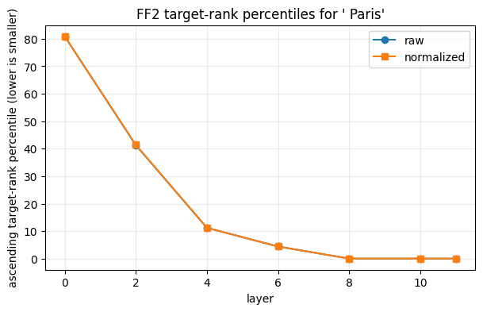
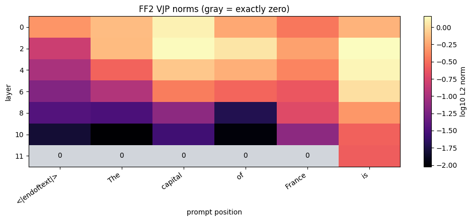

<!doctype html>
<html class="no-js" lang="en" data-content_root="../../">
  <head><meta charset="utf-8"/>
    <meta name="viewport" content="width=device-width,initial-scale=1"/>
    <meta name="color-scheme" content="light dark"><meta name="viewport" content="width=device-width, initial-scale=1" />
<link rel="index" title="Index" href="../../genindex.html" /><link rel="search" title="Search" href="../../search.html" /><link rel="next" title="Transformer Lens Main Demo Notebook" href="Main_Demo.html" /><link rel="prev" title="SwiGLU gate-sign regimes: double-negative echoes" href="SwiGLU_Gate_Sign_Demo.html" />

    <link rel="shortcut icon" href="../../_static/favicon.ico"/><!-- Generated with Sphinx 7.4.7 and Furo 2023.09.10 -->
        <title>Backward Lens: gradient factors in vocabulary space - TransformerLens Documentation</title>
      <link rel="stylesheet" type="text/css" href="../../_static/pygments.css?v=8f2a1f02" />
    <link rel="stylesheet" type="text/css" href="../../_static/styles/furo.css?v=135e06be" />
    <link rel="stylesheet" type="text/css" href="../../_static/nbsphinx-code-cells.css?v=2aa19091" />
    <link rel="stylesheet" type="text/css" href="../../_static/styles/furo-extensions.css?v=36a5483c" />
    <link rel="stylesheet" type="text/css" href="../../_static/custom.css?v=b3055e52" />
    
    


<style>
  body {
    --color-code-background: #f8f8f8;
  --color-code-foreground: black;
  
  }
  @media not print {
    body[data-theme="dark"] {
      --color-code-background: #202020;
  --color-code-foreground: #d0d0d0;
  
    }
    @media (prefers-color-scheme: dark) {
      body:not([data-theme="light"]) {
        --color-code-background: #202020;
  --color-code-foreground: #d0d0d0;
  
      }
    }
  }
</style></head>
  <body>
    
    <script>
      document.body.dataset.theme = localStorage.getItem("theme") || "auto";
    </script>
    

<svg xmlns="http://www.w3.org/2000/svg" style="display: none;">
  <symbol id="svg-toc" viewBox="0 0 24 24">
    <title>Contents</title>
    <svg stroke="currentColor" fill="currentColor" stroke-width="0" viewBox="0 0 1024 1024">
      <path d="M408 442h480c4.4 0 8-3.6 8-8v-56c0-4.4-3.6-8-8-8H408c-4.4 0-8 3.6-8 8v56c0 4.4 3.6 8 8 8zm-8 204c0 4.4 3.6 8 8 8h480c4.4 0 8-3.6 8-8v-56c0-4.4-3.6-8-8-8H408c-4.4 0-8 3.6-8 8v56zm504-486H120c-4.4 0-8 3.6-8 8v56c0 4.4 3.6 8 8 8h784c4.4 0 8-3.6 8-8v-56c0-4.4-3.6-8-8-8zm0 632H120c-4.4 0-8 3.6-8 8v56c0 4.4 3.6 8 8 8h784c4.4 0 8-3.6 8-8v-56c0-4.4-3.6-8-8-8zM115.4 518.9L271.7 642c5.8 4.6 14.4.5 14.4-6.9V388.9c0-7.4-8.5-11.5-14.4-6.9L115.4 505.1a8.74 8.74 0 0 0 0 13.8z"/>
    </svg>
  </symbol>
  <symbol id="svg-menu" viewBox="0 0 24 24">
    <title>Menu</title>
    <svg xmlns="http://www.w3.org/2000/svg" viewBox="0 0 24 24" fill="none" stroke="currentColor"
      stroke-width="2" stroke-linecap="round" stroke-linejoin="round" class="feather-menu">
      <line x1="3" y1="12" x2="21" y2="12"></line>
      <line x1="3" y1="6" x2="21" y2="6"></line>
      <line x1="3" y1="18" x2="21" y2="18"></line>
    </svg>
  </symbol>
  <symbol id="svg-arrow-right" viewBox="0 0 24 24">
    <title>Expand</title>
    <svg xmlns="http://www.w3.org/2000/svg" viewBox="0 0 24 24" fill="none" stroke="currentColor"
      stroke-width="2" stroke-linecap="round" stroke-linejoin="round" class="feather-chevron-right">
      <polyline points="9 18 15 12 9 6"></polyline>
    </svg>
  </symbol>
  <symbol id="svg-sun" viewBox="0 0 24 24">
    <title>Light mode</title>
    <svg xmlns="http://www.w3.org/2000/svg" viewBox="0 0 24 24" fill="none" stroke="currentColor"
      stroke-width="1.5" stroke-linecap="round" stroke-linejoin="round" class="feather-sun">
      <circle cx="12" cy="12" r="5"></circle>
      <line x1="12" y1="1" x2="12" y2="3"></line>
      <line x1="12" y1="21" x2="12" y2="23"></line>
      <line x1="4.22" y1="4.22" x2="5.64" y2="5.64"></line>
      <line x1="18.36" y1="18.36" x2="19.78" y2="19.78"></line>
      <line x1="1" y1="12" x2="3" y2="12"></line>
      <line x1="21" y1="12" x2="23" y2="12"></line>
      <line x1="4.22" y1="19.78" x2="5.64" y2="18.36"></line>
      <line x1="18.36" y1="5.64" x2="19.78" y2="4.22"></line>
    </svg>
  </symbol>
  <symbol id="svg-moon" viewBox="0 0 24 24">
    <title>Dark mode</title>
    <svg xmlns="http://www.w3.org/2000/svg" viewBox="0 0 24 24" fill="none" stroke="currentColor"
      stroke-width="1.5" stroke-linecap="round" stroke-linejoin="round" class="icon-tabler-moon">
      <path stroke="none" d="M0 0h24v24H0z" fill="none" />
      <path d="M12 3c.132 0 .263 0 .393 0a7.5 7.5 0 0 0 7.92 12.446a9 9 0 1 1 -8.313 -12.454z" />
    </svg>
  </symbol>
  <symbol id="svg-sun-half" viewBox="0 0 24 24">
    <title>Auto light/dark mode</title>
    <svg xmlns="http://www.w3.org/2000/svg" viewBox="0 0 24 24" fill="none" stroke="currentColor"
      stroke-width="1.5" stroke-linecap="round" stroke-linejoin="round" class="icon-tabler-shadow">
      <path stroke="none" d="M0 0h24v24H0z" fill="none"/>
      <circle cx="12" cy="12" r="9" />
      <path d="M13 12h5" />
      <path d="M13 15h4" />
      <path d="M13 18h1" />
      <path d="M13 9h4" />
      <path d="M13 6h1" />
    </svg>
  </symbol>
</svg>

<input type="checkbox" class="sidebar-toggle" name="__navigation" id="__navigation">
<input type="checkbox" class="sidebar-toggle" name="__toc" id="__toc">
<label class="overlay sidebar-overlay" for="__navigation">
  <div class="visually-hidden">Hide navigation sidebar</div>
</label>
<label class="overlay toc-overlay" for="__toc">
  <div class="visually-hidden">Hide table of contents sidebar</div>
</label>


<div class="page">
  <header class="mobile-header">
    <div class="header-left">
      <label class="nav-overlay-icon" for="__navigation">
        <div class="visually-hidden">Toggle site navigation sidebar</div>
        <i class="icon"><svg><use href="#svg-menu"></use></svg></i>
      </label>
    </div>
    <div class="header-center">
      <a href="../../index.html"><div class="brand">TransformerLens Documentation</div></a>
    </div>
    <div class="header-right">
      <div class="theme-toggle-container theme-toggle-header">
        <button class="theme-toggle">
          <div class="visually-hidden">Toggle Light / Dark / Auto color theme</div>
          <svg class="theme-icon-when-auto"><use href="#svg-sun-half"></use></svg>
          <svg class="theme-icon-when-dark"><use href="#svg-moon"></use></svg>
          <svg class="theme-icon-when-light"><use href="#svg-sun"></use></svg>
        </button>
      </div>
      <label class="toc-overlay-icon toc-header-icon" for="__toc">
        <div class="visually-hidden">Toggle table of contents sidebar</div>
        <i class="icon"><svg><use href="#svg-toc"></use></svg></i>
      </label>
    </div>
  </header>
  <aside class="sidebar-drawer">
    <div class="sidebar-container">
      
      <div class="sidebar-sticky"><a class="sidebar-brand" href="../../index.html">
  
  <div class="sidebar-logo-container">
    
  </div>
  
  <span class="sidebar-brand-text">TransformerLens Documentation</span>
  
</a><form class="sidebar-search-container" method="get" action="../../search.html" role="search">
  <input class="sidebar-search" placeholder="Search" name="q" aria-label="Search">
  <input type="hidden" name="check_keywords" value="yes">
  <input type="hidden" name="area" value="default">
</form>
<div id="searchbox"></div><div class="sidebar-scroll"><div class="sidebar-tree">
  <p class="caption" role="heading"><span class="caption-text">Introduction</span></p>
<ul>
<li class="toctree-l1"><a class="reference internal" href="../../content/getting_started.html">Getting Started</a></li>
<li class="toctree-l1"><a class="reference internal" href="../../content/getting_started_mech_interp.html">Getting Started in Mechanistic Interpretability</a></li>
<li class="toctree-l1"><a class="reference internal" href="../../content/gallery.html">Gallery</a></li>
</ul>
<p class="caption" role="heading"><span class="caption-text">News</span></p>
<ul>
<li class="toctree-l1"><a class="reference internal" href="../../content/news/release-4.0.html">TransformerLens 4.0</a></li>
<li class="toctree-l1 has-children"><a class="reference internal" href="../../content/news/past_releases.html">Past Major Releases</a><input class="toctree-checkbox" id="toctree-checkbox-1" name="toctree-checkbox-1" role="switch" type="checkbox"/><label for="toctree-checkbox-1"><div class="visually-hidden">Toggle navigation of Past Major Releases</div><i class="icon"><svg><use href="#svg-arrow-right"></use></svg></i></label><ul>
<li class="toctree-l2"><a class="reference internal" href="../../content/news/release-3.0.html">TransformerLens 3.0</a></li>
<li class="toctree-l2"><a class="reference internal" href="../../content/news/release-2.0.html">TransformerLens 2.0</a></li>
</ul>
</li>
</ul>
<p class="caption" role="heading"><span class="caption-text">Documentation</span></p>
<ul>
<li class="toctree-l1 has-children"><a class="reference internal" href="../code/modules.html">transformer_lens</a><input class="toctree-checkbox" id="toctree-checkbox-2" name="toctree-checkbox-2" role="switch" type="checkbox"/><label for="toctree-checkbox-2"><div class="visually-hidden">Toggle navigation of transformer_lens</div><i class="icon"><svg><use href="#svg-arrow-right"></use></svg></i></label><ul>
<li class="toctree-l2 has-children"><a class="reference internal" href="../code/transformer_lens.html">transformer_lens package</a><input class="toctree-checkbox" id="toctree-checkbox-3" name="toctree-checkbox-3" role="switch" type="checkbox"/><label for="toctree-checkbox-3"><div class="visually-hidden">Toggle navigation of transformer_lens package</div><i class="icon"><svg><use href="#svg-arrow-right"></use></svg></i></label><ul>
<li class="toctree-l3 has-children"><a class="reference internal" href="../code/transformer_lens.benchmarks.html">transformer_lens.benchmarks package</a><input class="toctree-checkbox" id="toctree-checkbox-4" name="toctree-checkbox-4" role="switch" type="checkbox"/><label for="toctree-checkbox-4"><div class="visually-hidden">Toggle navigation of transformer_lens.benchmarks package</div><i class="icon"><svg><use href="#svg-arrow-right"></use></svg></i></label><ul>
<li class="toctree-l4"><a class="reference internal" href="../code/transformer_lens.benchmarks.activation_cache.html">transformer_lens.benchmarks.activation_cache module</a></li>
<li class="toctree-l4"><a class="reference internal" href="../code/transformer_lens.benchmarks.audio.html">transformer_lens.benchmarks.audio module</a></li>
<li class="toctree-l4"><a class="reference internal" href="../code/transformer_lens.benchmarks.backward_gradients.html">transformer_lens.benchmarks.backward_gradients module</a></li>
<li class="toctree-l4"><a class="reference internal" href="../code/transformer_lens.benchmarks.component_benchmark.html">transformer_lens.benchmarks.component_benchmark module</a></li>
<li class="toctree-l4"><a class="reference internal" href="../code/transformer_lens.benchmarks.component_outputs.html">transformer_lens.benchmarks.component_outputs module</a></li>
<li class="toctree-l4"><a class="reference internal" href="../code/transformer_lens.benchmarks.encoder_common.html">transformer_lens.benchmarks.encoder_common module</a></li>
<li class="toctree-l4"><a class="reference internal" href="../code/transformer_lens.benchmarks.forward_pass.html">transformer_lens.benchmarks.forward_pass module</a></li>
<li class="toctree-l4"><a class="reference internal" href="../code/transformer_lens.benchmarks.generation.html">transformer_lens.benchmarks.generation module</a></li>
<li class="toctree-l4"><a class="reference internal" href="../code/transformer_lens.benchmarks.hook_registration.html">transformer_lens.benchmarks.hook_registration module</a></li>
<li class="toctree-l4"><a class="reference internal" href="../code/transformer_lens.benchmarks.main_benchmark.html">transformer_lens.benchmarks.main_benchmark module</a></li>
<li class="toctree-l4"><a class="reference internal" href="../code/transformer_lens.benchmarks.multimodal.html">transformer_lens.benchmarks.multimodal module</a></li>
<li class="toctree-l4"><a class="reference internal" href="../code/transformer_lens.benchmarks.text_quality.html">transformer_lens.benchmarks.text_quality module</a></li>
<li class="toctree-l4"><a class="reference internal" href="../code/transformer_lens.benchmarks.text_quality_profiles.html">transformer_lens.benchmarks.text_quality_profiles module</a></li>
<li class="toctree-l4"><a class="reference internal" href="../code/transformer_lens.benchmarks.utils.html">transformer_lens.benchmarks.utils module</a></li>
<li class="toctree-l4"><a class="reference internal" href="../code/transformer_lens.benchmarks.vision.html">transformer_lens.benchmarks.vision module</a></li>
<li class="toctree-l4"><a class="reference internal" href="../code/transformer_lens.benchmarks.weight_processing.html">transformer_lens.benchmarks.weight_processing module</a></li>
</ul>
</li>
<li class="toctree-l3 has-children"><a class="reference internal" href="../code/transformer_lens.cache.html">transformer_lens.cache package</a><input class="toctree-checkbox" id="toctree-checkbox-5" name="toctree-checkbox-5" role="switch" type="checkbox"/><label for="toctree-checkbox-5"><div class="visually-hidden">Toggle navigation of transformer_lens.cache package</div><i class="icon"><svg><use href="#svg-arrow-right"></use></svg></i></label><ul>
<li class="toctree-l4"><a class="reference internal" href="../code/transformer_lens.cache.key_value_cache.html">transformer_lens.cache.key_value_cache module</a></li>
<li class="toctree-l4"><a class="reference internal" href="../code/transformer_lens.cache.key_value_cache_entry.html">transformer_lens.cache.key_value_cache_entry module</a></li>
</ul>
</li>
<li class="toctree-l3 has-children"><a class="reference internal" href="../code/transformer_lens.config.html">transformer_lens.config package</a><input class="toctree-checkbox" id="toctree-checkbox-6" name="toctree-checkbox-6" role="switch" type="checkbox"/><label for="toctree-checkbox-6"><div class="visually-hidden">Toggle navigation of transformer_lens.config package</div><i class="icon"><svg><use href="#svg-arrow-right"></use></svg></i></label><ul>
<li class="toctree-l4"><a class="reference internal" href="../code/transformer_lens.config.transformer_bridge_config.html">transformer_lens.config.transformer_bridge_config module</a></li>
<li class="toctree-l4"><a class="reference internal" href="../code/transformer_lens.config.transformer_lens_config.html">transformer_lens.config.transformer_lens_config module</a></li>
</ul>
</li>
<li class="toctree-l3 has-children"><a class="reference internal" href="../code/transformer_lens.conversion_utils.html">transformer_lens.conversion_utils package</a><input class="toctree-checkbox" id="toctree-checkbox-7" name="toctree-checkbox-7" role="switch" type="checkbox"/><label for="toctree-checkbox-7"><div class="visually-hidden">Toggle navigation of transformer_lens.conversion_utils package</div><i class="icon"><svg><use href="#svg-arrow-right"></use></svg></i></label><ul>
<li class="toctree-l4 has-children"><a class="reference internal" href="../code/transformer_lens.conversion_utils.conversion_steps.html">transformer_lens.conversion_utils.conversion_steps package</a><input class="toctree-checkbox" id="toctree-checkbox-8" name="toctree-checkbox-8" role="switch" type="checkbox"/><label for="toctree-checkbox-8"><div class="visually-hidden">Toggle navigation of transformer_lens.conversion_utils.conversion_steps package</div><i class="icon"><svg><use href="#svg-arrow-right"></use></svg></i></label><ul>
<li class="toctree-l5"><a class="reference internal" href="../code/transformer_lens.conversion_utils.conversion_steps.arithmetic_tensor_conversion.html">transformer_lens.conversion_utils.conversion_steps.arithmetic_tensor_conversion module</a></li>
<li class="toctree-l5"><a class="reference internal" href="../code/transformer_lens.conversion_utils.conversion_steps.attention_auto_conversion.html">transformer_lens.conversion_utils.conversion_steps.attention_auto_conversion module</a></li>
<li class="toctree-l5"><a class="reference internal" href="../code/transformer_lens.conversion_utils.conversion_steps.base_tensor_conversion.html">transformer_lens.conversion_utils.conversion_steps.base_tensor_conversion module</a></li>
<li class="toctree-l5"><a class="reference internal" href="../code/transformer_lens.conversion_utils.conversion_steps.callable_tensor_conversion.html">transformer_lens.conversion_utils.conversion_steps.callable_tensor_conversion module</a></li>
<li class="toctree-l5"><a class="reference internal" href="../code/transformer_lens.conversion_utils.conversion_steps.chain_tensor_conversion.html">transformer_lens.conversion_utils.conversion_steps.chain_tensor_conversion module</a></li>
<li class="toctree-l5"><a class="reference internal" href="../code/transformer_lens.conversion_utils.conversion_steps.rearrange_tensor_conversion.html">transformer_lens.conversion_utils.conversion_steps.rearrange_tensor_conversion module</a></li>
<li class="toctree-l5"><a class="reference internal" href="../code/transformer_lens.conversion_utils.conversion_steps.repeat_tensor_conversion.html">transformer_lens.conversion_utils.conversion_steps.repeat_tensor_conversion module</a></li>
<li class="toctree-l5"><a class="reference internal" href="../code/transformer_lens.conversion_utils.conversion_steps.split_tensor_conversion.html">transformer_lens.conversion_utils.conversion_steps.split_tensor_conversion module</a></li>
<li class="toctree-l5"><a class="reference internal" href="../code/transformer_lens.conversion_utils.conversion_steps.tensor_conversion_set.html">transformer_lens.conversion_utils.conversion_steps.tensor_conversion_set module</a></li>
<li class="toctree-l5"><a class="reference internal" href="../code/transformer_lens.conversion_utils.conversion_steps.ternary_tensor_conversion.html">transformer_lens.conversion_utils.conversion_steps.ternary_tensor_conversion module</a></li>
<li class="toctree-l5"><a class="reference internal" href="../code/transformer_lens.conversion_utils.conversion_steps.transpose_tensor_conversion.html">transformer_lens.conversion_utils.conversion_steps.transpose_tensor_conversion module</a></li>
<li class="toctree-l5"><a class="reference internal" href="../code/transformer_lens.conversion_utils.conversion_steps.zeros_like_conversion.html">transformer_lens.conversion_utils.conversion_steps.zeros_like_conversion module</a></li>
</ul>
</li>
<li class="toctree-l4 has-children"><a class="reference internal" href="../code/transformer_lens.conversion_utils.helpers.html">transformer_lens.conversion_utils.helpers package</a><input class="toctree-checkbox" id="toctree-checkbox-9" name="toctree-checkbox-9" role="switch" type="checkbox"/><label for="toctree-checkbox-9"><div class="visually-hidden">Toggle navigation of transformer_lens.conversion_utils.helpers package</div><i class="icon"><svg><use href="#svg-arrow-right"></use></svg></i></label><ul>
<li class="toctree-l5"><a class="reference internal" href="../code/transformer_lens.conversion_utils.helpers.find_property.html">transformer_lens.conversion_utils.helpers.find_property module</a></li>
<li class="toctree-l5"><a class="reference internal" href="../code/transformer_lens.conversion_utils.helpers.merge_quantiziation_fields.html">transformer_lens.conversion_utils.helpers.merge_quantiziation_fields module</a></li>
</ul>
</li>
<li class="toctree-l4"><a class="reference internal" href="../code/transformer_lens.conversion_utils.hook_conversion_utils.html">transformer_lens.conversion_utils.hook_conversion_utils module</a></li>
<li class="toctree-l4"><a class="reference internal" href="../code/transformer_lens.conversion_utils.param_processing_conversion.html">transformer_lens.conversion_utils.param_processing_conversion module</a></li>
</ul>
</li>
<li class="toctree-l3 has-children"><a class="reference internal" href="../code/transformer_lens.factories.html">transformer_lens.factories package</a><input class="toctree-checkbox" id="toctree-checkbox-10" name="toctree-checkbox-10" role="switch" type="checkbox"/><label for="toctree-checkbox-10"><div class="visually-hidden">Toggle navigation of transformer_lens.factories package</div><i class="icon"><svg><use href="#svg-arrow-right"></use></svg></i></label><ul>
<li class="toctree-l4"><a class="reference internal" href="../code/transformer_lens.factories.activation_function_factory.html">transformer_lens.factories.activation_function_factory module</a></li>
<li class="toctree-l4"><a class="reference internal" href="../code/transformer_lens.factories.architecture_adapter_factory.html">transformer_lens.factories.architecture_adapter_factory module</a></li>
</ul>
</li>
<li class="toctree-l3 has-children"><a class="reference internal" href="../code/transformer_lens.lit.html">transformer_lens.lit package</a><input class="toctree-checkbox" id="toctree-checkbox-11" name="toctree-checkbox-11" role="switch" type="checkbox"/><label for="toctree-checkbox-11"><div class="visually-hidden">Toggle navigation of transformer_lens.lit package</div><i class="icon"><svg><use href="#svg-arrow-right"></use></svg></i></label><ul>
<li class="toctree-l4"><a class="reference internal" href="../code/transformer_lens.lit.constants.html">transformer_lens.lit.constants module</a></li>
<li class="toctree-l4"><a class="reference internal" href="../code/transformer_lens.lit.dataset.html">transformer_lens.lit.dataset module</a></li>
<li class="toctree-l4"><a class="reference internal" href="../code/transformer_lens.lit.model.html">transformer_lens.lit.model module</a></li>
<li class="toctree-l4"><a class="reference internal" href="../code/transformer_lens.lit.utils.html">transformer_lens.lit.utils module</a></li>
</ul>
</li>
<li class="toctree-l3 has-children"><a class="reference internal" href="../code/transformer_lens.model_bridge.html">transformer_lens.model_bridge package</a><input class="toctree-checkbox" id="toctree-checkbox-12" name="toctree-checkbox-12" role="switch" type="checkbox"/><label for="toctree-checkbox-12"><div class="visually-hidden">Toggle navigation of transformer_lens.model_bridge package</div><i class="icon"><svg><use href="#svg-arrow-right"></use></svg></i></label><ul>
<li class="toctree-l4 has-children"><a class="reference internal" href="../code/transformer_lens.model_bridge.generalized_components.html">transformer_lens.model_bridge.generalized_components package</a><input class="toctree-checkbox" id="toctree-checkbox-13" name="toctree-checkbox-13" role="switch" type="checkbox"/><label for="toctree-checkbox-13"><div class="visually-hidden">Toggle navigation of transformer_lens.model_bridge.generalized_components package</div><i class="icon"><svg><use href="#svg-arrow-right"></use></svg></i></label><ul>
<li class="toctree-l5"><a class="reference internal" href="../code/transformer_lens.model_bridge.generalized_components.alibi_joint_qkv_attention.html">transformer_lens.model_bridge.generalized_components.alibi_joint_qkv_attention module</a></li>
<li class="toctree-l5"><a class="reference internal" href="../code/transformer_lens.model_bridge.generalized_components.alibi_utils.html">transformer_lens.model_bridge.generalized_components.alibi_utils module</a></li>
<li class="toctree-l5"><a class="reference internal" href="../code/transformer_lens.model_bridge.generalized_components.altup_block.html">transformer_lens.model_bridge.generalized_components.altup_block module</a></li>
<li class="toctree-l5"><a class="reference internal" href="../code/transformer_lens.model_bridge.generalized_components.attention.html">transformer_lens.model_bridge.generalized_components.attention module</a></li>
<li class="toctree-l5"><a class="reference internal" href="../code/transformer_lens.model_bridge.generalized_components.audio_feature_extractor.html">transformer_lens.model_bridge.generalized_components.audio_feature_extractor module</a></li>
<li class="toctree-l5"><a class="reference internal" href="../code/transformer_lens.model_bridge.generalized_components.base.html">transformer_lens.model_bridge.generalized_components.base module</a></li>
<li class="toctree-l5"><a class="reference internal" href="../code/transformer_lens.model_bridge.generalized_components.block.html">transformer_lens.model_bridge.generalized_components.block module</a></li>
<li class="toctree-l5"><a class="reference internal" href="../code/transformer_lens.model_bridge.generalized_components.bloom_attention.html">transformer_lens.model_bridge.generalized_components.bloom_attention module</a></li>
<li class="toctree-l5"><a class="reference internal" href="../code/transformer_lens.model_bridge.generalized_components.bloom_block.html">transformer_lens.model_bridge.generalized_components.bloom_block module</a></li>
<li class="toctree-l5"><a class="reference internal" href="../code/transformer_lens.model_bridge.generalized_components.bloom_mlp.html">transformer_lens.model_bridge.generalized_components.bloom_mlp module</a></li>
<li class="toctree-l5"><a class="reference internal" href="../code/transformer_lens.model_bridge.generalized_components.clip_vision_encoder.html">transformer_lens.model_bridge.generalized_components.clip_vision_encoder module</a></li>
<li class="toctree-l5"><a class="reference internal" href="../code/transformer_lens.model_bridge.generalized_components.codegen_attention.html">transformer_lens.model_bridge.generalized_components.codegen_attention module</a></li>
<li class="toctree-l5"><a class="reference internal" href="../code/transformer_lens.model_bridge.generalized_components.conv1d.html">transformer_lens.model_bridge.generalized_components.conv1d module</a></li>
<li class="toctree-l5"><a class="reference internal" href="../code/transformer_lens.model_bridge.generalized_components.conv_pos_embed.html">transformer_lens.model_bridge.generalized_components.conv_pos_embed module</a></li>
<li class="toctree-l5"><a class="reference internal" href="../code/transformer_lens.model_bridge.generalized_components.depthwise_conv1d.html">transformer_lens.model_bridge.generalized_components.depthwise_conv1d module</a></li>
<li class="toctree-l5"><a class="reference internal" href="../code/transformer_lens.model_bridge.generalized_components.embedding.html">transformer_lens.model_bridge.generalized_components.embedding module</a></li>
<li class="toctree-l5"><a class="reference internal" href="../code/transformer_lens.model_bridge.generalized_components.gated_delta_net.html">transformer_lens.model_bridge.generalized_components.gated_delta_net module</a></li>
<li class="toctree-l5"><a class="reference internal" href="../code/transformer_lens.model_bridge.generalized_components.gated_mlp.html">transformer_lens.model_bridge.generalized_components.gated_mlp module</a></li>
<li class="toctree-l5"><a class="reference internal" href="../code/transformer_lens.model_bridge.generalized_components.gated_rms_norm.html">transformer_lens.model_bridge.generalized_components.gated_rms_norm module</a></li>
<li class="toctree-l5"><a class="reference internal" href="../code/transformer_lens.model_bridge.generalized_components.glm_moe_dsa_attention.html">transformer_lens.model_bridge.generalized_components.glm_moe_dsa_attention module</a></li>
<li class="toctree-l5"><a class="reference internal" href="../code/transformer_lens.model_bridge.generalized_components.joint_gate_up_mlp.html">transformer_lens.model_bridge.generalized_components.joint_gate_up_mlp module</a></li>
<li class="toctree-l5"><a class="reference internal" href="../code/transformer_lens.model_bridge.generalized_components.joint_qkv_attention.html">transformer_lens.model_bridge.generalized_components.joint_qkv_attention module</a></li>
<li class="toctree-l5"><a class="reference internal" href="../code/transformer_lens.model_bridge.generalized_components.joint_qkv_position_embeddings_attention.html">transformer_lens.model_bridge.generalized_components.joint_qkv_position_embeddings_attention module</a></li>
<li class="toctree-l5"><a class="reference internal" href="../code/transformer_lens.model_bridge.generalized_components.lfm2_gated_short_conv.html">transformer_lens.model_bridge.generalized_components.lfm2_gated_short_conv module</a></li>
<li class="toctree-l5"><a class="reference internal" href="../code/transformer_lens.model_bridge.generalized_components.linear.html">transformer_lens.model_bridge.generalized_components.linear module</a></li>
<li class="toctree-l5"><a class="reference internal" href="../code/transformer_lens.model_bridge.generalized_components.mla_attention.html">transformer_lens.model_bridge.generalized_components.mla_attention module</a></li>
<li class="toctree-l5"><a class="reference internal" href="../code/transformer_lens.model_bridge.generalized_components.mlp.html">transformer_lens.model_bridge.generalized_components.mlp module</a></li>
<li class="toctree-l5"><a class="reference internal" href="../code/transformer_lens.model_bridge.generalized_components.moe.html">transformer_lens.model_bridge.generalized_components.moe module</a></li>
<li class="toctree-l5"><a class="reference internal" href="../code/transformer_lens.model_bridge.generalized_components.mpt_alibi_attention.html">transformer_lens.model_bridge.generalized_components.mpt_alibi_attention module</a></li>
<li class="toctree-l5"><a class="reference internal" href="../code/transformer_lens.model_bridge.generalized_components.normalization.html">transformer_lens.model_bridge.generalized_components.normalization module</a></li>
<li class="toctree-l5"><a class="reference internal" href="../code/transformer_lens.model_bridge.generalized_components.opaque_block.html">transformer_lens.model_bridge.generalized_components.opaque_block module</a></li>
<li class="toctree-l5"><a class="reference internal" href="../code/transformer_lens.model_bridge.generalized_components.pooler.html">transformer_lens.model_bridge.generalized_components.pooler module</a></li>
<li class="toctree-l5"><a class="reference internal" href="../code/transformer_lens.model_bridge.generalized_components.pos_embed.html">transformer_lens.model_bridge.generalized_components.pos_embed module</a></li>
<li class="toctree-l5"><a class="reference internal" href="../code/transformer_lens.model_bridge.generalized_components.position_embedding_hooks_mixin.html">transformer_lens.model_bridge.generalized_components.position_embedding_hooks_mixin module</a></li>
<li class="toctree-l5"><a class="reference internal" href="../code/transformer_lens.model_bridge.generalized_components.position_embeddings_attention.html">transformer_lens.model_bridge.generalized_components.position_embeddings_attention module</a></li>
<li class="toctree-l5"><a class="reference internal" href="../code/transformer_lens.model_bridge.generalized_components.qwen3_5_vision_encoder.html">transformer_lens.model_bridge.generalized_components.qwen3_5_vision_encoder module</a></li>
<li class="toctree-l5"><a class="reference internal" href="../code/transformer_lens.model_bridge.generalized_components.rms_normalization.html">transformer_lens.model_bridge.generalized_components.rms_normalization module</a></li>
<li class="toctree-l5"><a class="reference internal" href="../code/transformer_lens.model_bridge.generalized_components.rotary_embedding.html">transformer_lens.model_bridge.generalized_components.rotary_embedding module</a></li>
<li class="toctree-l5"><a class="reference internal" href="../code/transformer_lens.model_bridge.generalized_components.siglip_vision_encoder.html">transformer_lens.model_bridge.generalized_components.siglip_vision_encoder module</a></li>
<li class="toctree-l5"><a class="reference internal" href="../code/transformer_lens.model_bridge.generalized_components.ssm2_mixer.html">transformer_lens.model_bridge.generalized_components.ssm2_mixer module</a></li>
<li class="toctree-l5"><a class="reference internal" href="../code/transformer_lens.model_bridge.generalized_components.ssm_block.html">transformer_lens.model_bridge.generalized_components.ssm_block module</a></li>
<li class="toctree-l5"><a class="reference internal" href="../code/transformer_lens.model_bridge.generalized_components.ssm_mixer.html">transformer_lens.model_bridge.generalized_components.ssm_mixer module</a></li>
<li class="toctree-l5"><a class="reference internal" href="../code/transformer_lens.model_bridge.generalized_components.ssm_protocol.html">transformer_lens.model_bridge.generalized_components.ssm_protocol module</a></li>
<li class="toctree-l5"><a class="reference internal" href="../code/transformer_lens.model_bridge.generalized_components.symbolic.html">transformer_lens.model_bridge.generalized_components.symbolic module</a></li>
<li class="toctree-l5"><a class="reference internal" href="../code/transformer_lens.model_bridge.generalized_components.t5_block.html">transformer_lens.model_bridge.generalized_components.t5_block module</a></li>
<li class="toctree-l5"><a class="reference internal" href="../code/transformer_lens.model_bridge.generalized_components.t5gemma2_decoder_block.html">transformer_lens.model_bridge.generalized_components.t5gemma2_decoder_block module</a></li>
<li class="toctree-l5"><a class="reference internal" href="../code/transformer_lens.model_bridge.generalized_components.t5gemma2_merged_attention.html">transformer_lens.model_bridge.generalized_components.t5gemma2_merged_attention module</a></li>
<li class="toctree-l5"><a class="reference internal" href="../code/transformer_lens.model_bridge.generalized_components.t5gemma_decoder_block.html">transformer_lens.model_bridge.generalized_components.t5gemma_decoder_block module</a></li>
<li class="toctree-l5"><a class="reference internal" href="../code/transformer_lens.model_bridge.generalized_components.unembedding.html">transformer_lens.model_bridge.generalized_components.unembedding module</a></li>
<li class="toctree-l5"><a class="reference internal" href="../code/transformer_lens.model_bridge.generalized_components.vision_classifier_head.html">transformer_lens.model_bridge.generalized_components.vision_classifier_head module</a></li>
<li class="toctree-l5"><a class="reference internal" href="../code/transformer_lens.model_bridge.generalized_components.vision_embeddings.html">transformer_lens.model_bridge.generalized_components.vision_embeddings module</a></li>
<li class="toctree-l5"><a class="reference internal" href="../code/transformer_lens.model_bridge.generalized_components.vision_encoder.html">transformer_lens.model_bridge.generalized_components.vision_encoder module</a></li>
<li class="toctree-l5"><a class="reference internal" href="../code/transformer_lens.model_bridge.generalized_components.vision_projection.html">transformer_lens.model_bridge.generalized_components.vision_projection module</a></li>
</ul>
</li>
<li class="toctree-l4 has-children"><a class="reference internal" href="../code/transformer_lens.model_bridge.sources.html">transformer_lens.model_bridge.sources package</a><input class="toctree-checkbox" id="toctree-checkbox-14" name="toctree-checkbox-14" role="switch" type="checkbox"/><label for="toctree-checkbox-14"><div class="visually-hidden">Toggle navigation of transformer_lens.model_bridge.sources package</div><i class="icon"><svg><use href="#svg-arrow-right"></use></svg></i></label><ul>
<li class="toctree-l5 has-children"><a class="reference internal" href="../code/transformer_lens.model_bridge.sources.inspect.html">transformer_lens.model_bridge.sources.inspect package</a><input class="toctree-checkbox" id="toctree-checkbox-15" name="toctree-checkbox-15" role="switch" type="checkbox"/><label for="toctree-checkbox-15"><div class="visually-hidden">Toggle navigation of transformer_lens.model_bridge.sources.inspect package</div><i class="icon"><svg><use href="#svg-arrow-right"></use></svg></i></label><ul>
<li class="toctree-l6"><a class="reference internal" href="../code/transformer_lens.model_bridge.sources.inspect.conftest.html">transformer_lens.model_bridge.sources.inspect.conftest module</a></li>
<li class="toctree-l6"><a class="reference internal" href="../code/transformer_lens.model_bridge.sources.inspect.driver.html">transformer_lens.model_bridge.sources.inspect.driver module</a></li>
<li class="toctree-l6"><a class="reference internal" href="../code/transformer_lens.model_bridge.sources.inspect.eval.html">transformer_lens.model_bridge.sources.inspect.eval module</a></li>
<li class="toctree-l6"><a class="reference internal" href="../code/transformer_lens.model_bridge.sources.inspect.hooks.html">transformer_lens.model_bridge.sources.inspect.hooks module</a></li>
<li class="toctree-l6"><a class="reference internal" href="../code/transformer_lens.model_bridge.sources.inspect.intervention.html">transformer_lens.model_bridge.sources.inspect.intervention module</a></li>
<li class="toctree-l6"><a class="reference internal" href="../code/transformer_lens.model_bridge.sources.inspect.masks.html">transformer_lens.model_bridge.sources.inspect.masks module</a></li>
<li class="toctree-l6"><a class="reference internal" href="../code/transformer_lens.model_bridge.sources.inspect.profiles.html">transformer_lens.model_bridge.sources.inspect.profiles module</a></li>
<li class="toctree-l6"><a class="reference internal" href="../code/transformer_lens.model_bridge.sources.inspect.source.html">transformer_lens.model_bridge.sources.inspect.source module</a></li>
<li class="toctree-l6"><a class="reference internal" href="../code/transformer_lens.model_bridge.sources.inspect.transformers_provider.html">transformer_lens.model_bridge.sources.inspect.transformers_provider module</a></li>
<li class="toctree-l6"><a class="reference internal" href="../code/transformer_lens.model_bridge.sources.inspect.vllm_provider.html">transformer_lens.model_bridge.sources.inspect.vllm_provider module</a></li>
<li class="toctree-l6"><a class="reference internal" href="../code/transformer_lens.model_bridge.sources.inspect.wire.html">transformer_lens.model_bridge.sources.inspect.wire module</a></li>
</ul>
</li>
<li class="toctree-l5 has-children"><a class="reference internal" href="../code/transformer_lens.model_bridge.sources.native.html">transformer_lens.model_bridge.sources.native package</a><input class="toctree-checkbox" id="toctree-checkbox-16" name="toctree-checkbox-16" role="switch" type="checkbox"/><label for="toctree-checkbox-16"><div class="visually-hidden">Toggle navigation of transformer_lens.model_bridge.sources.native package</div><i class="icon"><svg><use href="#svg-arrow-right"></use></svg></i></label><ul>
<li class="toctree-l6"><a class="reference internal" href="../code/transformer_lens.model_bridge.sources.native.init.html">transformer_lens.model_bridge.sources.native.init module</a></li>
<li class="toctree-l6"><a class="reference internal" href="../code/transformer_lens.model_bridge.sources.native.model.html">transformer_lens.model_bridge.sources.native.model module</a></li>
</ul>
</li>
<li class="toctree-l5 has-children"><a class="reference internal" href="../code/transformer_lens.model_bridge.sources.transformers.html">transformer_lens.model_bridge.sources.transformers package</a><input class="toctree-checkbox" id="toctree-checkbox-17" name="toctree-checkbox-17" role="switch" type="checkbox"/><label for="toctree-checkbox-17"><div class="visually-hidden">Toggle navigation of transformer_lens.model_bridge.sources.transformers package</div><i class="icon"><svg><use href="#svg-arrow-right"></use></svg></i></label><ul>
<li class="toctree-l6"><a class="reference internal" href="../code/transformer_lens.model_bridge.sources.transformers.helpers.html">transformer_lens.model_bridge.sources.transformers.helpers module</a></li>
<li class="toctree-l6"><a class="reference internal" href="../code/transformer_lens.model_bridge.sources.transformers.source.html">transformer_lens.model_bridge.sources.transformers.source module</a></li>
</ul>
</li>
<li class="toctree-l5 has-children"><a class="reference internal" href="../code/transformer_lens.model_bridge.sources.vllm.html">transformer_lens.model_bridge.sources.vllm package</a><input class="toctree-checkbox" id="toctree-checkbox-18" name="toctree-checkbox-18" role="switch" type="checkbox"/><label for="toctree-checkbox-18"><div class="visually-hidden">Toggle navigation of transformer_lens.model_bridge.sources.vllm package</div><i class="icon"><svg><use href="#svg-arrow-right"></use></svg></i></label><ul>
<li class="toctree-l6 has-children"><a class="reference internal" href="../code/transformer_lens.model_bridge.sources.vllm.overlays.html">transformer_lens.model_bridge.sources.vllm.overlays package</a><input class="toctree-checkbox" id="toctree-checkbox-19" name="toctree-checkbox-19" role="switch" type="checkbox"/><label for="toctree-checkbox-19"><div class="visually-hidden">Toggle navigation of transformer_lens.model_bridge.sources.vllm.overlays package</div><i class="icon"><svg><use href="#svg-arrow-right"></use></svg></i></label><ul>
<li class="toctree-l7"><a class="reference internal" href="../code/transformer_lens.model_bridge.sources.vllm.overlays.base.html">transformer_lens.model_bridge.sources.vllm.overlays.base module</a></li>
<li class="toctree-l7"><a class="reference internal" href="../code/transformer_lens.model_bridge.sources.vllm.overlays.decoder_only.html">transformer_lens.model_bridge.sources.vllm.overlays.decoder_only module</a></li>
</ul>
</li>
<li class="toctree-l6"><a class="reference internal" href="../code/transformer_lens.model_bridge.sources.vllm.driver.html">transformer_lens.model_bridge.sources.vllm.driver module</a></li>
<li class="toctree-l6"><a class="reference internal" href="../code/transformer_lens.model_bridge.sources.vllm.internals.html">transformer_lens.model_bridge.sources.vllm.internals module</a></li>
<li class="toctree-l6"><a class="reference internal" href="../code/transformer_lens.model_bridge.sources.vllm.intervention_specs.html">transformer_lens.model_bridge.sources.vllm.intervention_specs module</a></li>
<li class="toctree-l6"><a class="reference internal" href="../code/transformer_lens.model_bridge.sources.vllm.plugin.html">transformer_lens.model_bridge.sources.vllm.plugin module</a></li>
<li class="toctree-l6"><a class="reference internal" href="../code/transformer_lens.model_bridge.sources.vllm.source.html">transformer_lens.model_bridge.sources.vllm.source module</a></li>
<li class="toctree-l6"><a class="reference internal" href="../code/transformer_lens.model_bridge.sources.vllm.worker_extension.html">transformer_lens.model_bridge.sources.vllm.worker_extension module</a></li>
</ul>
</li>
<li class="toctree-l5"><a class="reference internal" href="../code/transformer_lens.model_bridge.sources.tl_legacy.html">transformer_lens.model_bridge.sources.tl_legacy module</a></li>
<li class="toctree-l5"><a class="reference internal" href="../code/transformer_lens.model_bridge.sources.transformers_driver.html">transformer_lens.model_bridge.sources.transformers_driver module</a></li>
</ul>
</li>
<li class="toctree-l4 has-children"><a class="reference internal" href="../code/transformer_lens.model_bridge.supported_architectures.html">transformer_lens.model_bridge.supported_architectures package</a><input class="toctree-checkbox" id="toctree-checkbox-20" name="toctree-checkbox-20" role="switch" type="checkbox"/><label for="toctree-checkbox-20"><div class="visually-hidden">Toggle navigation of transformer_lens.model_bridge.supported_architectures package</div><i class="icon"><svg><use href="#svg-arrow-right"></use></svg></i></label><ul>
<li class="toctree-l5"><a class="reference internal" href="../code/transformer_lens.model_bridge.supported_architectures.afmoe.html">transformer_lens.model_bridge.supported_architectures.afmoe module</a></li>
<li class="toctree-l5"><a class="reference internal" href="../code/transformer_lens.model_bridge.supported_architectures.apertus.html">transformer_lens.model_bridge.supported_architectures.apertus module</a></li>
<li class="toctree-l5"><a class="reference internal" href="../code/transformer_lens.model_bridge.supported_architectures.arcee.html">transformer_lens.model_bridge.supported_architectures.arcee module</a></li>
<li class="toctree-l5"><a class="reference internal" href="../code/transformer_lens.model_bridge.supported_architectures.ast.html">transformer_lens.model_bridge.supported_architectures.ast module</a></li>
<li class="toctree-l5"><a class="reference internal" href="../code/transformer_lens.model_bridge.supported_architectures.audio_flamingo3.html">transformer_lens.model_bridge.supported_architectures.audio_flamingo3 module</a></li>
<li class="toctree-l5"><a class="reference internal" href="../code/transformer_lens.model_bridge.supported_architectures.baichuan.html">transformer_lens.model_bridge.supported_architectures.baichuan module</a></li>
<li class="toctree-l5"><a class="reference internal" href="../code/transformer_lens.model_bridge.supported_architectures.bamba.html">transformer_lens.model_bridge.supported_architectures.bamba module</a></li>
<li class="toctree-l5"><a class="reference internal" href="../code/transformer_lens.model_bridge.supported_architectures.bart.html">transformer_lens.model_bridge.supported_architectures.bart module</a></li>
<li class="toctree-l5"><a class="reference internal" href="../code/transformer_lens.model_bridge.supported_architectures.bd3lm.html">transformer_lens.model_bridge.supported_architectures.bd3lm module</a></li>
<li class="toctree-l5"><a class="reference internal" href="../code/transformer_lens.model_bridge.supported_architectures.bert.html">transformer_lens.model_bridge.supported_architectures.bert module</a></li>
<li class="toctree-l5"><a class="reference internal" href="../code/transformer_lens.model_bridge.supported_architectures.bitnet.html">transformer_lens.model_bridge.supported_architectures.bitnet module</a></li>
<li class="toctree-l5"><a class="reference internal" href="../code/transformer_lens.model_bridge.supported_architectures.blenderbot.html">transformer_lens.model_bridge.supported_architectures.blenderbot module</a></li>
<li class="toctree-l5"><a class="reference internal" href="../code/transformer_lens.model_bridge.supported_architectures.bloom.html">transformer_lens.model_bridge.supported_architectures.bloom module</a></li>
<li class="toctree-l5"><a class="reference internal" href="../code/transformer_lens.model_bridge.supported_architectures.codegen.html">transformer_lens.model_bridge.supported_architectures.codegen module</a></li>
<li class="toctree-l5"><a class="reference internal" href="../code/transformer_lens.model_bridge.supported_architectures.cohere.html">transformer_lens.model_bridge.supported_architectures.cohere module</a></li>
<li class="toctree-l5"><a class="reference internal" href="../code/transformer_lens.model_bridge.supported_architectures.deepseek_v2.html">transformer_lens.model_bridge.supported_architectures.deepseek_v2 module</a></li>
<li class="toctree-l5"><a class="reference internal" href="../code/transformer_lens.model_bridge.supported_architectures.deepseek_v3.html">transformer_lens.model_bridge.supported_architectures.deepseek_v3 module</a></li>
<li class="toctree-l5"><a class="reference internal" href="../code/transformer_lens.model_bridge.supported_architectures.deepseek_v4.html">transformer_lens.model_bridge.supported_architectures.deepseek_v4 module</a></li>
<li class="toctree-l5"><a class="reference internal" href="../code/transformer_lens.model_bridge.supported_architectures.dream.html">transformer_lens.model_bridge.supported_architectures.dream module</a></li>
<li class="toctree-l5"><a class="reference internal" href="../code/transformer_lens.model_bridge.supported_architectures.emu3.html">transformer_lens.model_bridge.supported_architectures.emu3 module</a></li>
<li class="toctree-l5"><a class="reference internal" href="../code/transformer_lens.model_bridge.supported_architectures.ernie4_5.html">transformer_lens.model_bridge.supported_architectures.ernie4_5 module</a></li>
<li class="toctree-l5"><a class="reference internal" href="../code/transformer_lens.model_bridge.supported_architectures.ernie4_5_moe.html">transformer_lens.model_bridge.supported_architectures.ernie4_5_moe module</a></li>
<li class="toctree-l5"><a class="reference internal" href="../code/transformer_lens.model_bridge.supported_architectures.exaone.html">transformer_lens.model_bridge.supported_architectures.exaone module</a></li>
<li class="toctree-l5"><a class="reference internal" href="../code/transformer_lens.model_bridge.supported_architectures.exaone4.html">transformer_lens.model_bridge.supported_architectures.exaone4 module</a></li>
<li class="toctree-l5"><a class="reference internal" href="../code/transformer_lens.model_bridge.supported_architectures.falcon.html">transformer_lens.model_bridge.supported_architectures.falcon module</a></li>
<li class="toctree-l5"><a class="reference internal" href="../code/transformer_lens.model_bridge.supported_architectures.falcon_h1.html">transformer_lens.model_bridge.supported_architectures.falcon_h1 module</a></li>
<li class="toctree-l5"><a class="reference internal" href="../code/transformer_lens.model_bridge.supported_architectures.falcon_mamba.html">transformer_lens.model_bridge.supported_architectures.falcon_mamba module</a></li>
<li class="toctree-l5"><a class="reference internal" href="../code/transformer_lens.model_bridge.supported_architectures.flex_olmo.html">transformer_lens.model_bridge.supported_architectures.flex_olmo module</a></li>
<li class="toctree-l5"><a class="reference internal" href="../code/transformer_lens.model_bridge.supported_architectures.florence2.html">transformer_lens.model_bridge.supported_architectures.florence2 module</a></li>
<li class="toctree-l5"><a class="reference internal" href="../code/transformer_lens.model_bridge.supported_architectures.gemma1.html">transformer_lens.model_bridge.supported_architectures.gemma1 module</a></li>
<li class="toctree-l5"><a class="reference internal" href="../code/transformer_lens.model_bridge.supported_architectures.gemma2.html">transformer_lens.model_bridge.supported_architectures.gemma2 module</a></li>
<li class="toctree-l5"><a class="reference internal" href="../code/transformer_lens.model_bridge.supported_architectures.gemma3.html">transformer_lens.model_bridge.supported_architectures.gemma3 module</a></li>
<li class="toctree-l5"><a class="reference internal" href="../code/transformer_lens.model_bridge.supported_architectures.gemma3_multimodal.html">transformer_lens.model_bridge.supported_architectures.gemma3_multimodal module</a></li>
<li class="toctree-l5"><a class="reference internal" href="../code/transformer_lens.model_bridge.supported_architectures.gemma3n.html">transformer_lens.model_bridge.supported_architectures.gemma3n module</a></li>
<li class="toctree-l5"><a class="reference internal" href="../code/transformer_lens.model_bridge.supported_architectures.gemma4.html">transformer_lens.model_bridge.supported_architectures.gemma4 module</a></li>
<li class="toctree-l5"><a class="reference internal" href="../code/transformer_lens.model_bridge.supported_architectures.gemma4_text.html">transformer_lens.model_bridge.supported_architectures.gemma4_text module</a></li>
<li class="toctree-l5"><a class="reference internal" href="../code/transformer_lens.model_bridge.supported_architectures.gidd.html">transformer_lens.model_bridge.supported_architectures.gidd module</a></li>
<li class="toctree-l5"><a class="reference internal" href="../code/transformer_lens.model_bridge.supported_architectures.glm.html">transformer_lens.model_bridge.supported_architectures.glm module</a></li>
<li class="toctree-l5"><a class="reference internal" href="../code/transformer_lens.model_bridge.supported_architectures.glm4.html">transformer_lens.model_bridge.supported_architectures.glm4 module</a></li>
<li class="toctree-l5"><a class="reference internal" href="../code/transformer_lens.model_bridge.supported_architectures.glm4_moe.html">transformer_lens.model_bridge.supported_architectures.glm4_moe module</a></li>
<li class="toctree-l5"><a class="reference internal" href="../code/transformer_lens.model_bridge.supported_architectures.glm4_moe_lite.html">transformer_lens.model_bridge.supported_architectures.glm4_moe_lite module</a></li>
<li class="toctree-l5"><a class="reference internal" href="../code/transformer_lens.model_bridge.supported_architectures.glm4v.html">transformer_lens.model_bridge.supported_architectures.glm4v module</a></li>
<li class="toctree-l5"><a class="reference internal" href="../code/transformer_lens.model_bridge.supported_architectures.glm_asr.html">transformer_lens.model_bridge.supported_architectures.glm_asr module</a></li>
<li class="toctree-l5"><a class="reference internal" href="../code/transformer_lens.model_bridge.supported_architectures.glm_moe_dsa.html">transformer_lens.model_bridge.supported_architectures.glm_moe_dsa module</a></li>
<li class="toctree-l5"><a class="reference internal" href="../code/transformer_lens.model_bridge.supported_architectures.gpt2.html">transformer_lens.model_bridge.supported_architectures.gpt2 module</a></li>
<li class="toctree-l5"><a class="reference internal" href="../code/transformer_lens.model_bridge.supported_architectures.gpt2_lm_head_custom.html">transformer_lens.model_bridge.supported_architectures.gpt2_lm_head_custom module</a></li>
<li class="toctree-l5"><a class="reference internal" href="../code/transformer_lens.model_bridge.supported_architectures.gpt_bigcode.html">transformer_lens.model_bridge.supported_architectures.gpt_bigcode module</a></li>
<li class="toctree-l5"><a class="reference internal" href="../code/transformer_lens.model_bridge.supported_architectures.gpt_oss.html">transformer_lens.model_bridge.supported_architectures.gpt_oss module</a></li>
<li class="toctree-l5"><a class="reference internal" href="../code/transformer_lens.model_bridge.supported_architectures.gptj.html">transformer_lens.model_bridge.supported_architectures.gptj module</a></li>
<li class="toctree-l5"><a class="reference internal" href="../code/transformer_lens.model_bridge.supported_architectures.granite.html">transformer_lens.model_bridge.supported_architectures.granite module</a></li>
<li class="toctree-l5"><a class="reference internal" href="../code/transformer_lens.model_bridge.supported_architectures.granite_moe.html">transformer_lens.model_bridge.supported_architectures.granite_moe module</a></li>
<li class="toctree-l5"><a class="reference internal" href="../code/transformer_lens.model_bridge.supported_architectures.granite_moe_hybrid.html">transformer_lens.model_bridge.supported_architectures.granite_moe_hybrid module</a></li>
<li class="toctree-l5"><a class="reference internal" href="../code/transformer_lens.model_bridge.supported_architectures.hrm_text.html">transformer_lens.model_bridge.supported_architectures.hrm_text module</a></li>
<li class="toctree-l5"><a class="reference internal" href="../code/transformer_lens.model_bridge.supported_architectures.hubert.html">transformer_lens.model_bridge.supported_architectures.hubert module</a></li>
<li class="toctree-l5"><a class="reference internal" href="../code/transformer_lens.model_bridge.supported_architectures.hunyuan_v1_dense.html">transformer_lens.model_bridge.supported_architectures.hunyuan_v1_dense module</a></li>
<li class="toctree-l5"><a class="reference internal" href="../code/transformer_lens.model_bridge.supported_architectures.hyenadna.html">transformer_lens.model_bridge.supported_architectures.hyenadna module</a></li>
<li class="toctree-l5"><a class="reference internal" href="../code/transformer_lens.model_bridge.supported_architectures.idefics3.html">transformer_lens.model_bridge.supported_architectures.idefics3 module</a></li>
<li class="toctree-l5"><a class="reference internal" href="../code/transformer_lens.model_bridge.supported_architectures.internlm2.html">transformer_lens.model_bridge.supported_architectures.internlm2 module</a></li>
<li class="toctree-l5"><a class="reference internal" href="../code/transformer_lens.model_bridge.supported_architectures.jais2.html">transformer_lens.model_bridge.supported_architectures.jais2 module</a></li>
<li class="toctree-l5"><a class="reference internal" href="../code/transformer_lens.model_bridge.supported_architectures.jamba.html">transformer_lens.model_bridge.supported_architectures.jamba module</a></li>
<li class="toctree-l5"><a class="reference internal" href="../code/transformer_lens.model_bridge.supported_architectures.jetmoe.html">transformer_lens.model_bridge.supported_architectures.jetmoe module</a></li>
<li class="toctree-l5"><a class="reference internal" href="../code/transformer_lens.model_bridge.supported_architectures.laguna.html">transformer_lens.model_bridge.supported_architectures.laguna module</a></li>
<li class="toctree-l5"><a class="reference internal" href="../code/transformer_lens.model_bridge.supported_architectures.led.html">transformer_lens.model_bridge.supported_architectures.led module</a></li>
<li class="toctree-l5"><a class="reference internal" href="../code/transformer_lens.model_bridge.supported_architectures.lfm2.html">transformer_lens.model_bridge.supported_architectures.lfm2 module</a></li>
<li class="toctree-l5"><a class="reference internal" href="../code/transformer_lens.model_bridge.supported_architectures.lfm2_moe.html">transformer_lens.model_bridge.supported_architectures.lfm2_moe module</a></li>
<li class="toctree-l5"><a class="reference internal" href="../code/transformer_lens.model_bridge.supported_architectures.llada.html">transformer_lens.model_bridge.supported_architectures.llada module</a></li>
<li class="toctree-l5"><a class="reference internal" href="../code/transformer_lens.model_bridge.supported_architectures.llada2_moe.html">transformer_lens.model_bridge.supported_architectures.llada2_moe module</a></li>
<li class="toctree-l5"><a class="reference internal" href="../code/transformer_lens.model_bridge.supported_architectures.llama.html">transformer_lens.model_bridge.supported_architectures.llama module</a></li>
<li class="toctree-l5"><a class="reference internal" href="../code/transformer_lens.model_bridge.supported_architectures.llama4.html">transformer_lens.model_bridge.supported_architectures.llama4 module</a></li>
<li class="toctree-l5"><a class="reference internal" href="../code/transformer_lens.model_bridge.supported_architectures.llama4_multimodal.html">transformer_lens.model_bridge.supported_architectures.llama4_multimodal module</a></li>
<li class="toctree-l5"><a class="reference internal" href="../code/transformer_lens.model_bridge.supported_architectures.llava.html">transformer_lens.model_bridge.supported_architectures.llava module</a></li>
<li class="toctree-l5"><a class="reference internal" href="../code/transformer_lens.model_bridge.supported_architectures.llava_next.html">transformer_lens.model_bridge.supported_architectures.llava_next module</a></li>
<li class="toctree-l5"><a class="reference internal" href="../code/transformer_lens.model_bridge.supported_architectures.llava_onevision.html">transformer_lens.model_bridge.supported_architectures.llava_onevision module</a></li>
<li class="toctree-l5"><a class="reference internal" href="../code/transformer_lens.model_bridge.supported_architectures.longt5.html">transformer_lens.model_bridge.supported_architectures.longt5 module</a></li>
<li class="toctree-l5"><a class="reference internal" href="../code/transformer_lens.model_bridge.supported_architectures.m2m100.html">transformer_lens.model_bridge.supported_architectures.m2m100 module</a></li>
<li class="toctree-l5"><a class="reference internal" href="../code/transformer_lens.model_bridge.supported_architectures.mamba.html">transformer_lens.model_bridge.supported_architectures.mamba module</a></li>
<li class="toctree-l5"><a class="reference internal" href="../code/transformer_lens.model_bridge.supported_architectures.mamba2.html">transformer_lens.model_bridge.supported_architectures.mamba2 module</a></li>
<li class="toctree-l5"><a class="reference internal" href="../code/transformer_lens.model_bridge.supported_architectures.marian.html">transformer_lens.model_bridge.supported_architectures.marian module</a></li>
<li class="toctree-l5"><a class="reference internal" href="../code/transformer_lens.model_bridge.supported_architectures.mbart.html">transformer_lens.model_bridge.supported_architectures.mbart module</a></li>
<li class="toctree-l5"><a class="reference internal" href="../code/transformer_lens.model_bridge.supported_architectures.mingpt.html">transformer_lens.model_bridge.supported_architectures.mingpt module</a></li>
<li class="toctree-l5"><a class="reference internal" href="../code/transformer_lens.model_bridge.supported_architectures.minimax_m2.html">transformer_lens.model_bridge.supported_architectures.minimax_m2 module</a></li>
<li class="toctree-l5"><a class="reference internal" href="../code/transformer_lens.model_bridge.supported_architectures.ministral3.html">transformer_lens.model_bridge.supported_architectures.ministral3 module</a></li>
<li class="toctree-l5"><a class="reference internal" href="../code/transformer_lens.model_bridge.supported_architectures.mistral.html">transformer_lens.model_bridge.supported_architectures.mistral module</a></li>
<li class="toctree-l5"><a class="reference internal" href="../code/transformer_lens.model_bridge.supported_architectures.mistral3.html">transformer_lens.model_bridge.supported_architectures.mistral3 module</a></li>
<li class="toctree-l5"><a class="reference internal" href="../code/transformer_lens.model_bridge.supported_architectures.mixtral.html">transformer_lens.model_bridge.supported_architectures.mixtral module</a></li>
<li class="toctree-l5"><a class="reference internal" href="../code/transformer_lens.model_bridge.supported_architectures.modernbert_decoder.html">transformer_lens.model_bridge.supported_architectures.modernbert_decoder module</a></li>
<li class="toctree-l5"><a class="reference internal" href="../code/transformer_lens.model_bridge.supported_architectures.mpt.html">transformer_lens.model_bridge.supported_architectures.mpt module</a></li>
<li class="toctree-l5"><a class="reference internal" href="../code/transformer_lens.model_bridge.supported_architectures.muse_glimmer.html">transformer_lens.model_bridge.supported_architectures.muse_glimmer module</a></li>
<li class="toctree-l5"><a class="reference internal" href="../code/transformer_lens.model_bridge.supported_architectures.music_flamingo.html">transformer_lens.model_bridge.supported_architectures.music_flamingo module</a></li>
<li class="toctree-l5"><a class="reference internal" href="../code/transformer_lens.model_bridge.supported_architectures.nanochat.html">transformer_lens.model_bridge.supported_architectures.nanochat module</a></li>
<li class="toctree-l5"><a class="reference internal" href="../code/transformer_lens.model_bridge.supported_architectures.nanogpt.html">transformer_lens.model_bridge.supported_architectures.nanogpt module</a></li>
<li class="toctree-l5"><a class="reference internal" href="../code/transformer_lens.model_bridge.supported_architectures.native.html">transformer_lens.model_bridge.supported_architectures.native module</a></li>
<li class="toctree-l5"><a class="reference internal" href="../code/transformer_lens.model_bridge.supported_architectures.neel_solu_old.html">transformer_lens.model_bridge.supported_architectures.neel_solu_old module</a></li>
<li class="toctree-l5"><a class="reference internal" href="../code/transformer_lens.model_bridge.supported_architectures.nemotron.html">transformer_lens.model_bridge.supported_architectures.nemotron module</a></li>
<li class="toctree-l5"><a class="reference internal" href="../code/transformer_lens.model_bridge.supported_architectures.nemotron_h.html">transformer_lens.model_bridge.supported_architectures.nemotron_h module</a></li>
<li class="toctree-l5"><a class="reference internal" href="../code/transformer_lens.model_bridge.supported_architectures.neo.html">transformer_lens.model_bridge.supported_architectures.neo module</a></li>
<li class="toctree-l5"><a class="reference internal" href="../code/transformer_lens.model_bridge.supported_architectures.neox.html">transformer_lens.model_bridge.supported_architectures.neox module</a></li>
<li class="toctree-l5"><a class="reference internal" href="../code/transformer_lens.model_bridge.supported_architectures.olmo.html">transformer_lens.model_bridge.supported_architectures.olmo module</a></li>
<li class="toctree-l5"><a class="reference internal" href="../code/transformer_lens.model_bridge.supported_architectures.olmo2.html">transformer_lens.model_bridge.supported_architectures.olmo2 module</a></li>
<li class="toctree-l5"><a class="reference internal" href="../code/transformer_lens.model_bridge.supported_architectures.olmo3.html">transformer_lens.model_bridge.supported_architectures.olmo3 module</a></li>
<li class="toctree-l5"><a class="reference internal" href="../code/transformer_lens.model_bridge.supported_architectures.olmo_hybrid.html">transformer_lens.model_bridge.supported_architectures.olmo_hybrid module</a></li>
<li class="toctree-l5"><a class="reference internal" href="../code/transformer_lens.model_bridge.supported_architectures.olmoe.html">transformer_lens.model_bridge.supported_architectures.olmoe module</a></li>
<li class="toctree-l5"><a class="reference internal" href="../code/transformer_lens.model_bridge.supported_architectures.openai_gpt.html">transformer_lens.model_bridge.supported_architectures.openai_gpt module</a></li>
<li class="toctree-l5"><a class="reference internal" href="../code/transformer_lens.model_bridge.supported_architectures.openelm.html">transformer_lens.model_bridge.supported_architectures.openelm module</a></li>
<li class="toctree-l5"><a class="reference internal" href="../code/transformer_lens.model_bridge.supported_architectures.opt.html">transformer_lens.model_bridge.supported_architectures.opt module</a></li>
<li class="toctree-l5"><a class="reference internal" href="../code/transformer_lens.model_bridge.supported_architectures.ouro.html">transformer_lens.model_bridge.supported_architectures.ouro module</a></li>
<li class="toctree-l5"><a class="reference internal" href="../code/transformer_lens.model_bridge.supported_architectures.pegasus.html">transformer_lens.model_bridge.supported_architectures.pegasus module</a></li>
<li class="toctree-l5"><a class="reference internal" href="../code/transformer_lens.model_bridge.supported_architectures.phi.html">transformer_lens.model_bridge.supported_architectures.phi module</a></li>
<li class="toctree-l5"><a class="reference internal" href="../code/transformer_lens.model_bridge.supported_architectures.phi3.html">transformer_lens.model_bridge.supported_architectures.phi3 module</a></li>
<li class="toctree-l5"><a class="reference internal" href="../code/transformer_lens.model_bridge.supported_architectures.phimoe.html">transformer_lens.model_bridge.supported_architectures.phimoe module</a></li>
<li class="toctree-l5"><a class="reference internal" href="../code/transformer_lens.model_bridge.supported_architectures.pretrain.html">transformer_lens.model_bridge.supported_architectures.pretrain module</a></li>
<li class="toctree-l5"><a class="reference internal" href="../code/transformer_lens.model_bridge.supported_architectures.qwen.html">transformer_lens.model_bridge.supported_architectures.qwen module</a></li>
<li class="toctree-l5"><a class="reference internal" href="../code/transformer_lens.model_bridge.supported_architectures.qwen2.html">transformer_lens.model_bridge.supported_architectures.qwen2 module</a></li>
<li class="toctree-l5"><a class="reference internal" href="../code/transformer_lens.model_bridge.supported_architectures.qwen2_5_vl.html">transformer_lens.model_bridge.supported_architectures.qwen2_5_vl module</a></li>
<li class="toctree-l5"><a class="reference internal" href="../code/transformer_lens.model_bridge.supported_architectures.qwen2_audio.html">transformer_lens.model_bridge.supported_architectures.qwen2_audio module</a></li>
<li class="toctree-l5"><a class="reference internal" href="../code/transformer_lens.model_bridge.supported_architectures.qwen2_moe.html">transformer_lens.model_bridge.supported_architectures.qwen2_moe module</a></li>
<li class="toctree-l5"><a class="reference internal" href="../code/transformer_lens.model_bridge.supported_architectures.qwen3.html">transformer_lens.model_bridge.supported_architectures.qwen3 module</a></li>
<li class="toctree-l5"><a class="reference internal" href="../code/transformer_lens.model_bridge.supported_architectures.qwen3_5.html">transformer_lens.model_bridge.supported_architectures.qwen3_5 module</a></li>
<li class="toctree-l5"><a class="reference internal" href="../code/transformer_lens.model_bridge.supported_architectures.qwen3_5_moe.html">transformer_lens.model_bridge.supported_architectures.qwen3_5_moe module</a></li>
<li class="toctree-l5"><a class="reference internal" href="../code/transformer_lens.model_bridge.supported_architectures.qwen3_5_multimodal.html">transformer_lens.model_bridge.supported_architectures.qwen3_5_multimodal module</a></li>
<li class="toctree-l5"><a class="reference internal" href="../code/transformer_lens.model_bridge.supported_architectures.qwen3_moe.html">transformer_lens.model_bridge.supported_architectures.qwen3_moe module</a></li>
<li class="toctree-l5"><a class="reference internal" href="../code/transformer_lens.model_bridge.supported_architectures.qwen3_next.html">transformer_lens.model_bridge.supported_architectures.qwen3_next module</a></li>
<li class="toctree-l5"><a class="reference internal" href="../code/transformer_lens.model_bridge.supported_architectures.qwen3_vl.html">transformer_lens.model_bridge.supported_architectures.qwen3_vl module</a></li>
<li class="toctree-l5"><a class="reference internal" href="../code/transformer_lens.model_bridge.supported_architectures.qwen3_vl_moe.html">transformer_lens.model_bridge.supported_architectures.qwen3_vl_moe module</a></li>
<li class="toctree-l5"><a class="reference internal" href="../code/transformer_lens.model_bridge.supported_architectures.raven.html">transformer_lens.model_bridge.supported_architectures.raven module</a></li>
<li class="toctree-l5"><a class="reference internal" href="../code/transformer_lens.model_bridge.supported_architectures.recurrent_gemma.html">transformer_lens.model_bridge.supported_architectures.recurrent_gemma module</a></li>
<li class="toctree-l5"><a class="reference internal" href="../code/transformer_lens.model_bridge.supported_architectures.roberta.html">transformer_lens.model_bridge.supported_architectures.roberta module</a></li>
<li class="toctree-l5"><a class="reference internal" href="../code/transformer_lens.model_bridge.supported_architectures.rwkv.html">transformer_lens.model_bridge.supported_architectures.rwkv module</a></li>
<li class="toctree-l5"><a class="reference internal" href="../code/transformer_lens.model_bridge.supported_architectures.rwkv7.html">transformer_lens.model_bridge.supported_architectures.rwkv7 module</a></li>
<li class="toctree-l5"><a class="reference internal" href="../code/transformer_lens.model_bridge.supported_architectures.seed_oss.html">transformer_lens.model_bridge.supported_architectures.seed_oss module</a></li>
<li class="toctree-l5"><a class="reference internal" href="../code/transformer_lens.model_bridge.supported_architectures.smollm3.html">transformer_lens.model_bridge.supported_architectures.smollm3 module</a></li>
<li class="toctree-l5"><a class="reference internal" href="../code/transformer_lens.model_bridge.supported_architectures.stablelm.html">transformer_lens.model_bridge.supported_architectures.stablelm module</a></li>
<li class="toctree-l5"><a class="reference internal" href="../code/transformer_lens.model_bridge.supported_architectures.starcoder2.html">transformer_lens.model_bridge.supported_architectures.starcoder2 module</a></li>
<li class="toctree-l5"><a class="reference internal" href="../code/transformer_lens.model_bridge.supported_architectures.switch_transformers.html">transformer_lens.model_bridge.supported_architectures.switch_transformers module</a></li>
<li class="toctree-l5"><a class="reference internal" href="../code/transformer_lens.model_bridge.supported_architectures.t5.html">transformer_lens.model_bridge.supported_architectures.t5 module</a></li>
<li class="toctree-l5"><a class="reference internal" href="../code/transformer_lens.model_bridge.supported_architectures.t5gemma.html">transformer_lens.model_bridge.supported_architectures.t5gemma module</a></li>
<li class="toctree-l5"><a class="reference internal" href="../code/transformer_lens.model_bridge.supported_architectures.t5gemma2.html">transformer_lens.model_bridge.supported_architectures.t5gemma2 module</a></li>
<li class="toctree-l5"><a class="reference internal" href="../code/transformer_lens.model_bridge.supported_architectures.vaultgemma.html">transformer_lens.model_bridge.supported_architectures.vaultgemma module</a></li>
<li class="toctree-l5"><a class="reference internal" href="../code/transformer_lens.model_bridge.supported_architectures.vit.html">transformer_lens.model_bridge.supported_architectures.vit module</a></li>
<li class="toctree-l5"><a class="reference internal" href="../code/transformer_lens.model_bridge.supported_architectures.wav2vec2.html">transformer_lens.model_bridge.supported_architectures.wav2vec2 module</a></li>
<li class="toctree-l5"><a class="reference internal" href="../code/transformer_lens.model_bridge.supported_architectures.xglm.html">transformer_lens.model_bridge.supported_architectures.xglm module</a></li>
<li class="toctree-l5"><a class="reference internal" href="../code/transformer_lens.model_bridge.supported_architectures.youtu.html">transformer_lens.model_bridge.supported_architectures.youtu module</a></li>
<li class="toctree-l5"><a class="reference internal" href="../code/transformer_lens.model_bridge.supported_architectures.zamba2.html">transformer_lens.model_bridge.supported_architectures.zamba2 module</a></li>
</ul>
</li>
<li class="toctree-l4"><a class="reference internal" href="../code/transformer_lens.model_bridge.architecture_adapter.html">transformer_lens.model_bridge.architecture_adapter module</a></li>
<li class="toctree-l4"><a class="reference internal" href="../code/transformer_lens.model_bridge.bridge.html">transformer_lens.model_bridge.bridge module</a></li>
<li class="toctree-l4"><a class="reference internal" href="../code/transformer_lens.model_bridge.bridge_core.html">transformer_lens.model_bridge.bridge_core module</a></li>
<li class="toctree-l4"><a class="reference internal" href="../code/transformer_lens.model_bridge.buffer_restore.html">transformer_lens.model_bridge.buffer_restore module</a></li>
<li class="toctree-l4"><a class="reference internal" href="../code/transformer_lens.model_bridge.compat.html">transformer_lens.model_bridge.compat module</a></li>
<li class="toctree-l4"><a class="reference internal" href="../code/transformer_lens.model_bridge.component_setup.html">transformer_lens.model_bridge.component_setup module</a></li>
<li class="toctree-l4"><a class="reference internal" href="../code/transformer_lens.model_bridge.composition_scores.html">transformer_lens.model_bridge.composition_scores module</a></li>
<li class="toctree-l4"><a class="reference internal" href="../code/transformer_lens.model_bridge.driver_protocol.html">transformer_lens.model_bridge.driver_protocol module</a></li>
<li class="toctree-l4"><a class="reference internal" href="../code/transformer_lens.model_bridge.exceptions.html">transformer_lens.model_bridge.exceptions module</a></li>
<li class="toctree-l4"><a class="reference internal" href="../code/transformer_lens.model_bridge.get_params_util.html">transformer_lens.model_bridge.get_params_util module</a></li>
<li class="toctree-l4"><a class="reference internal" href="../code/transformer_lens.model_bridge.remote_bridge.html">transformer_lens.model_bridge.remote_bridge module</a></li>
<li class="toctree-l4"><a class="reference internal" href="../code/transformer_lens.model_bridge.transformer_bridge.html">transformer_lens.model_bridge.transformer_bridge module</a></li>
<li class="toctree-l4"><a class="reference internal" href="../code/transformer_lens.model_bridge.types.html">transformer_lens.model_bridge.types module</a></li>
</ul>
</li>
<li class="toctree-l3 has-children"><a class="reference internal" href="../code/transformer_lens.tools.html">transformer_lens.tools package</a><input class="toctree-checkbox" id="toctree-checkbox-21" name="toctree-checkbox-21" role="switch" type="checkbox"/><label for="toctree-checkbox-21"><div class="visually-hidden">Toggle navigation of transformer_lens.tools package</div><i class="icon"><svg><use href="#svg-arrow-right"></use></svg></i></label><ul>
<li class="toctree-l4 has-children"><a class="reference internal" href="../code/transformer_lens.tools.analysis.html">transformer_lens.tools.analysis package</a><input class="toctree-checkbox" id="toctree-checkbox-22" name="toctree-checkbox-22" role="switch" type="checkbox"/><label for="toctree-checkbox-22"><div class="visually-hidden">Toggle navigation of transformer_lens.tools.analysis package</div><i class="icon"><svg><use href="#svg-arrow-right"></use></svg></i></label><ul>
<li class="toctree-l5"><a class="reference internal" href="../code/transformer_lens.tools.analysis.attribution_patching.html">transformer_lens.tools.analysis.attribution_patching module</a></li>
<li class="toctree-l5"><a class="reference internal" href="../code/transformer_lens.tools.analysis.direct_logit_attribution.html">transformer_lens.tools.analysis.direct_logit_attribution module</a></li>
<li class="toctree-l5"><a class="reference internal" href="../code/transformer_lens.tools.analysis.direct_path_patching.html">transformer_lens.tools.analysis.direct_path_patching module</a></li>
<li class="toctree-l5"><a class="reference internal" href="../code/transformer_lens.tools.analysis.interchange.html">transformer_lens.tools.analysis.interchange module</a></li>
<li class="toctree-l5"><a class="reference internal" href="../code/transformer_lens.tools.analysis.jacobian_lens.html">transformer_lens.tools.analysis.jacobian_lens module</a></li>
<li class="toctree-l5"><a class="reference internal" href="../code/transformer_lens.tools.analysis.jacobian_lens_coordinate_patch.html">transformer_lens.tools.analysis.jacobian_lens_coordinate_patch module</a></li>
<li class="toctree-l5"><a class="reference internal" href="../code/transformer_lens.tools.analysis.jacobian_lens_decomposition.html">transformer_lens.tools.analysis.jacobian_lens_decomposition module</a></li>
<li class="toctree-l5"><a class="reference internal" href="../code/transformer_lens.tools.analysis.logit_lens.html">transformer_lens.tools.analysis.logit_lens module</a></li>
<li class="toctree-l5"><a class="reference internal" href="../code/transformer_lens.tools.analysis.projection_kernel.html">transformer_lens.tools.analysis.projection_kernel module</a></li>
<li class="toctree-l5"><a class="reference internal" href="../code/transformer_lens.tools.analysis.sparse_probing.html">transformer_lens.tools.analysis.sparse_probing module</a></li>
</ul>
</li>
<li class="toctree-l4 has-children"><a class="reference internal" href="../code/transformer_lens.tools.model_registry.html">transformer_lens.tools.model_registry package</a><input class="toctree-checkbox" id="toctree-checkbox-23" name="toctree-checkbox-23" role="switch" type="checkbox"/><label for="toctree-checkbox-23"><div class="visually-hidden">Toggle navigation of transformer_lens.tools.model_registry package</div><i class="icon"><svg><use href="#svg-arrow-right"></use></svg></i></label><ul>
<li class="toctree-l5"><a class="reference internal" href="../code/transformer_lens.tools.model_registry.alias_drift.html">transformer_lens.tools.model_registry.alias_drift module</a></li>
<li class="toctree-l5"><a class="reference internal" href="../code/transformer_lens.tools.model_registry.api.html">transformer_lens.tools.model_registry.api module</a></li>
<li class="toctree-l5"><a class="reference internal" href="../code/transformer_lens.tools.model_registry.checkpoints.html">transformer_lens.tools.model_registry.checkpoints module</a></li>
<li class="toctree-l5"><a class="reference internal" href="../code/transformer_lens.tools.model_registry.discover_architectures.html">transformer_lens.tools.model_registry.discover_architectures module</a></li>
<li class="toctree-l5"><a class="reference internal" href="../code/transformer_lens.tools.model_registry.exceptions.html">transformer_lens.tools.model_registry.exceptions module</a></li>
<li class="toctree-l5"><a class="reference internal" href="../code/transformer_lens.tools.model_registry.generate_report.html">transformer_lens.tools.model_registry.generate_report module</a></li>
<li class="toctree-l5"><a class="reference internal" href="../code/transformer_lens.tools.model_registry.hf_scraper.html">transformer_lens.tools.model_registry.hf_scraper module</a></li>
<li class="toctree-l5"><a class="reference internal" href="../code/transformer_lens.tools.model_registry.registry_io.html">transformer_lens.tools.model_registry.registry_io module</a></li>
<li class="toctree-l5"><a class="reference internal" href="../code/transformer_lens.tools.model_registry.relevancy.html">transformer_lens.tools.model_registry.relevancy module</a></li>
<li class="toctree-l5"><a class="reference internal" href="../code/transformer_lens.tools.model_registry.schemas.html">transformer_lens.tools.model_registry.schemas module</a></li>
<li class="toctree-l5"><a class="reference internal" href="../code/transformer_lens.tools.model_registry.validate.html">transformer_lens.tools.model_registry.validate module</a></li>
<li class="toctree-l5"><a class="reference internal" href="../code/transformer_lens.tools.model_registry.verification.html">transformer_lens.tools.model_registry.verification module</a></li>
<li class="toctree-l5"><a class="reference internal" href="../code/transformer_lens.tools.model_registry.verify_models.html">transformer_lens.tools.model_registry.verify_models module</a></li>
</ul>
</li>
<li class="toctree-l4"><a class="reference internal" href="../code/transformer_lens.tools.training.html">transformer_lens.tools.training module</a></li>
</ul>
</li>
<li class="toctree-l3 has-children"><a class="reference internal" href="../code/transformer_lens.utilities.html">transformer_lens.utilities package</a><input class="toctree-checkbox" id="toctree-checkbox-24" name="toctree-checkbox-24" role="switch" type="checkbox"/><label for="toctree-checkbox-24"><div class="visually-hidden">Toggle navigation of transformer_lens.utilities package</div><i class="icon"><svg><use href="#svg-arrow-right"></use></svg></i></label><ul>
<li class="toctree-l4"><a class="reference internal" href="../code/transformer_lens.utilities.activation_functions.html">transformer_lens.utilities.activation_functions module</a></li>
<li class="toctree-l4"><a class="reference internal" href="../code/transformer_lens.utilities.addmm.html">transformer_lens.utilities.addmm module</a></li>
<li class="toctree-l4"><a class="reference internal" href="../code/transformer_lens.utilities.aliases.html">transformer_lens.utilities.aliases module</a></li>
<li class="toctree-l4"><a class="reference internal" href="../code/transformer_lens.utilities.architectures.html">transformer_lens.utilities.architectures module</a></li>
<li class="toctree-l4"><a class="reference internal" href="../code/transformer_lens.utilities.attention.html">transformer_lens.utilities.attention module</a></li>
<li class="toctree-l4"><a class="reference internal" href="../code/transformer_lens.utilities.attn_implementation.html">transformer_lens.utilities.attn_implementation module</a></li>
<li class="toctree-l4"><a class="reference internal" href="../code/transformer_lens.utilities.attribute_utils.html">transformer_lens.utilities.attribute_utils module</a></li>
<li class="toctree-l4"><a class="reference internal" href="../code/transformer_lens.utilities.bridge_components.html">transformer_lens.utilities.bridge_components module</a></li>
<li class="toctree-l4"><a class="reference internal" href="../code/transformer_lens.utilities.cache.html">transformer_lens.utilities.cache module</a></li>
<li class="toctree-l4"><a class="reference internal" href="../code/transformer_lens.utilities.components_utils.html">transformer_lens.utilities.components_utils module</a></li>
<li class="toctree-l4"><a class="reference internal" href="../code/transformer_lens.utilities.defaults_utils.html">transformer_lens.utilities.defaults_utils module</a></li>
<li class="toctree-l4"><a class="reference internal" href="../code/transformer_lens.utilities.devices.html">transformer_lens.utilities.devices module</a></li>
<li class="toctree-l4"><a class="reference internal" href="../code/transformer_lens.utilities.exploratory_utils.html">transformer_lens.utilities.exploratory_utils module</a></li>
<li class="toctree-l4"><a class="reference internal" href="../code/transformer_lens.utilities.gpu_utils.html">transformer_lens.utilities.gpu_utils module</a></li>
<li class="toctree-l4"><a class="reference internal" href="../code/transformer_lens.utilities.heterogeneous_config.html">transformer_lens.utilities.heterogeneous_config module</a></li>
<li class="toctree-l4"><a class="reference internal" href="../code/transformer_lens.utilities.hf_utils.html">transformer_lens.utilities.hf_utils module</a></li>
<li class="toctree-l4"><a class="reference internal" href="../code/transformer_lens.utilities.initialization_utils.html">transformer_lens.utilities.initialization_utils module</a></li>
<li class="toctree-l4"><a class="reference internal" href="../code/transformer_lens.utilities.library_utils.html">transformer_lens.utilities.library_utils module</a></li>
<li class="toctree-l4"><a class="reference internal" href="../code/transformer_lens.utilities.lm_utils.html">transformer_lens.utilities.lm_utils module</a></li>
<li class="toctree-l4"><a class="reference internal" href="../code/transformer_lens.utilities.logits_utils.html">transformer_lens.utilities.logits_utils module</a></li>
<li class="toctree-l4"><a class="reference internal" href="../code/transformer_lens.utilities.matrix.html">transformer_lens.utilities.matrix module</a></li>
<li class="toctree-l4"><a class="reference internal" href="../code/transformer_lens.utilities.multi_gpu.html">transformer_lens.utilities.multi_gpu module</a></li>
<li class="toctree-l4"><a class="reference internal" href="../code/transformer_lens.utilities.parameter_swap.html">transformer_lens.utilities.parameter_swap module</a></li>
<li class="toctree-l4"><a class="reference internal" href="../code/transformer_lens.utilities.position_ids.html">transformer_lens.utilities.position_ids module</a></li>
<li class="toctree-l4"><a class="reference internal" href="../code/transformer_lens.utilities.quantization.html">transformer_lens.utilities.quantization module</a></li>
<li class="toctree-l4"><a class="reference internal" href="../code/transformer_lens.utilities.slice.html">transformer_lens.utilities.slice module</a></li>
<li class="toctree-l4"><a class="reference internal" href="../code/transformer_lens.utilities.statistics.html">transformer_lens.utilities.statistics module</a></li>
<li class="toctree-l4"><a class="reference internal" href="../code/transformer_lens.utilities.tensors.html">transformer_lens.utilities.tensors module</a></li>
<li class="toctree-l4"><a class="reference internal" href="../code/transformer_lens.utilities.tl_checkpoint_conversion.html">transformer_lens.utilities.tl_checkpoint_conversion module</a></li>
<li class="toctree-l4"><a class="reference internal" href="../code/transformer_lens.utilities.tokenize_utils.html">transformer_lens.utilities.tokenize_utils module</a></li>
<li class="toctree-l4"><a class="reference internal" href="../code/transformer_lens.utilities.tracr.html">transformer_lens.utilities.tracr module</a></li>
<li class="toctree-l4"><a class="reference internal" href="../code/transformer_lens.utilities.typed_module_list.html">transformer_lens.utilities.typed_module_list module</a></li>
</ul>
</li>
<li class="toctree-l3"><a class="reference internal" href="../code/transformer_lens.HookedRootModule.html">transformer_lens.HookedRootModule module</a></li>
<li class="toctree-l3"><a class="reference internal" href="../code/transformer_lens.evals.html">transformer_lens.evals module</a></li>
<li class="toctree-l3"><a class="reference internal" href="../code/transformer_lens.head_detector.html">transformer_lens.head_detector module</a></li>
<li class="toctree-l3"><a class="reference internal" href="../code/transformer_lens.hook_points.html">transformer_lens.hook_points module</a></li>
<li class="toctree-l3"><a class="reference internal" href="../code/transformer_lens.model_protocol.html">transformer_lens.model_protocol module</a></li>
<li class="toctree-l3"><a class="reference internal" href="../code/transformer_lens.patching.html">transformer_lens.patching module</a></li>
<li class="toctree-l3"><a class="reference internal" href="../code/transformer_lens.supported_models.html">transformer_lens.supported_models module</a></li>
<li class="toctree-l3"><a class="reference internal" href="../code/transformer_lens.weight_processing.html">transformer_lens.weight_processing module</a></li>
</ul>
</li>
</ul>
</li>
<li class="toctree-l1 has-children"><a class="reference internal" href="../../content/model_tables.html">Model Tables</a><input class="toctree-checkbox" id="toctree-checkbox-25" name="toctree-checkbox-25" role="switch" type="checkbox"/><label for="toctree-checkbox-25"><div class="visually-hidden">Toggle navigation of Model Tables</div><i class="icon"><svg><use href="#svg-arrow-right"></use></svg></i></label><ul>
<li class="toctree-l2"><a class="reference internal" href="../../content/hooked_transformer_model_properties.html">HookedTransformer Model Properties</a></li>
<li class="toctree-l2"><a class="reference internal" href="../transformer_bridge_models.html">TransformerBridge Models</a></li>
</ul>
</li>
<li class="toctree-l1"><a class="reference internal" href="../../content/model_structure.html">TransformerBridge Model Structure</a></li>
</ul>
<p class="caption" role="heading"><span class="caption-text">Resources</span></p>
<ul class="current">
<li class="toctree-l1"><a class="reference internal" href="../../content/migrating_to_v4.html">Migrating to TransformerLens 4.0</a></li>
<li class="toctree-l1"><a class="reference internal" href="../../content/migrating_to_v3.html">Migrating to TransformerLens 3</a></li>
<li class="toctree-l1"><a class="reference internal" href="../../content/analysis_tools.html">Choosing an analysis tool</a></li>
<li class="toctree-l1"><a class="reference internal" href="../../content/tutorials.html">Tutorials</a></li>
<li class="toctree-l1"><a class="reference internal" href="../../content/citation.html">Citation</a></li>
<li class="toctree-l1 has-children"><a class="reference internal" href="../../content/contributing.html">Contributing</a><input class="toctree-checkbox" id="toctree-checkbox-26" name="toctree-checkbox-26" role="switch" type="checkbox"/><label for="toctree-checkbox-26"><div class="visually-hidden">Toggle navigation of Contributing</div><i class="icon"><svg><use href="#svg-arrow-right"></use></svg></i></label><ul>
<li class="toctree-l2"><a class="reference internal" href="../../content/adapter_development/adapter-creation-guide.html">Architecture Adapter Creation Guide</a></li>
<li class="toctree-l2"><a class="reference internal" href="../../content/adapter_development/adapter-unit-test-guide.html">Architecture Unit Test Suite Guide</a></li>
<li class="toctree-l2"><a class="reference internal" href="../../content/adapter_development/hf-model-analysis-guide.html">HuggingFace Model Analysis Guide</a></li>
<li class="toctree-l2"><a class="reference internal" href="../../content/adapter_development/hf-scraper.html">HuggingFace Model Scraper</a></li>
<li class="toctree-l2"><a class="reference internal" href="../../content/adapter_development/external-adapter-registration.html">External Architecture Adapter Registration</a></li>
<li class="toctree-l2"><a class="reference internal" href="../../content/adapter_development/adapter-builder-tool.html">Automated Adapter Builder</a></li>
</ul>
</li>
<li class="toctree-l1"><a class="reference internal" href="../../content/hook_system.html">The Hook System</a></li>
<li class="toctree-l1"><a class="reference internal" href="../../content/drivers.html">Execution Backends (the Driver System)</a></li>
<li class="toctree-l1"><a class="reference internal" href="../../content/compatibility_mode.html">TransformerBridge Compatibility Mode</a></li>
<li class="toctree-l1"><a class="reference internal" href="../../content/ssm_interpretability.html">SSM / Recurrent-Model Interpretability</a></li>
<li class="toctree-l1"><a class="reference internal" href="../../content/projection_kernel.html">Projection Kernel</a></li>
<li class="toctree-l1"><a class="reference internal" href="../../content/jacobian_lens_fitting.html">Fitting a Jacobian lens</a></li>
<li class="toctree-l1"><a class="reference internal" href="Jacobian_Lens_Decomposition_Demo.html">Jacobian Lens: sparse decomposition in J-space</a></li>
<li class="toctree-l1"><a class="reference internal" href="Jacobian_Lens_Coordinate_Patch_Benchmark_Demo.html">Coordinate-patch causal-swap benchmark</a></li>
<li class="toctree-l1"><a class="reference internal" href="../../content/debugging_numerical_divergence.html">Debugging Numerical Divergence</a></li>
<li class="toctree-l1"><a class="reference internal" href="../../content/sparse_probing.html">Sparse Probing</a></li>
<li class="toctree-l1"><a class="reference internal" href="../../content/interchange_interventions.html">Interchange Interventions</a></li>
<li class="toctree-l1"><a class="reference internal" href="SVD_Circuits_Demo.html">SVD Circuits Demo</a></li>
<li class="toctree-l1"><a class="reference internal" href="SwiGLU_Gate_Sign_Demo.html">SwiGLU gate-sign regimes: double-negative echoes</a></li>
<li class="toctree-l1 current current-page"><a class="current reference internal" href="#">Backward Lens: gradient factors in vocabulary space</a></li>
<li class="toctree-l1"><a class="reference internal" href="Main_Demo.html">Transformer Lens Main Demo Notebook</a></li>
<li class="toctree-l1"><a class="reference internal" href="Main_Demo.html#Setup">Setup</a></li>
<li class="toctree-l1"><a class="reference internal" href="Main_Demo.html#Introduction">Introduction</a></li>
<li class="toctree-l1"><a class="reference internal" href="Main_Demo.html#Features">Features</a></li>
<li class="toctree-l1"><a class="reference internal" href="Exploratory_Analysis_Demo.html">Exploratory Analysis Demo</a></li>
<li class="toctree-l1"><a class="reference internal" href="../../content/special_cases.html">Special Cases</a></li>
</ul>
<p class="caption" role="heading"><span class="caption-text">Development</span></p>
<ul>
<li class="toctree-l1 has-children"><a class="reference internal" href="../../content/contributing.html">Contributing</a><input class="toctree-checkbox" id="toctree-checkbox-27" name="toctree-checkbox-27" role="switch" type="checkbox"/><label for="toctree-checkbox-27"><div class="visually-hidden">Toggle navigation of Contributing</div><i class="icon"><svg><use href="#svg-arrow-right"></use></svg></i></label><ul>
<li class="toctree-l2"><a class="reference internal" href="../../content/adapter_development/adapter-creation-guide.html">Architecture Adapter Creation Guide</a></li>
<li class="toctree-l2"><a class="reference internal" href="../../content/adapter_development/adapter-unit-test-guide.html">Architecture Unit Test Suite Guide</a></li>
<li class="toctree-l2"><a class="reference internal" href="../../content/adapter_development/hf-model-analysis-guide.html">HuggingFace Model Analysis Guide</a></li>
<li class="toctree-l2"><a class="reference internal" href="../../content/adapter_development/hf-scraper.html">HuggingFace Model Scraper</a></li>
<li class="toctree-l2"><a class="reference internal" href="../../content/adapter_development/external-adapter-registration.html">External Architecture Adapter Registration</a></li>
<li class="toctree-l2"><a class="reference internal" href="../../content/adapter_development/adapter-builder-tool.html">Automated Adapter Builder</a></li>
</ul>
</li>
<li class="toctree-l1"><a class="reference external" href="https://transformerlensorg.github.io/TransformerLens/_static/coverage/">Code Coverage</a></li>
<li class="toctree-l1"><a class="reference external" href="https://github.com/TransformerLensOrg/TransformerLens">Github</a></li>
</ul>

</div>
</div>

      </div>
      
    </div>
  </aside>
  <div class="main">
    <div class="content">
      <div class="article-container">
        <a href="#" class="back-to-top muted-link">
          <svg xmlns="http://www.w3.org/2000/svg" viewBox="0 0 24 24">
            <path d="M13 20h-2V8l-5.5 5.5-1.42-1.42L12 4.16l7.92 7.92-1.42 1.42L13 8v12z"></path>
          </svg>
          <span>Back to top</span>
        </a>
        <div class="content-icon-container">
          
<div class="theme-toggle-container theme-toggle-content">
            <button class="theme-toggle">
              <div class="visually-hidden">Toggle Light / Dark / Auto color theme</div>
              <svg class="theme-icon-when-auto"><use href="#svg-sun-half"></use></svg>
              <svg class="theme-icon-when-dark"><use href="#svg-moon"></use></svg>
              <svg class="theme-icon-when-light"><use href="#svg-sun"></use></svg>
            </button>
          </div>
          <label class="toc-overlay-icon toc-content-icon" for="__toc">
            <div class="visually-hidden">Toggle table of contents sidebar</div>
            <i class="icon"><svg><use href="#svg-toc"></use></svg></i>
          </label>
        </div>
        <article role="main">
          <script src="https://cdn.jsdelivr.net/npm/requirejs@2.3.6/require.min.js"></script>
<script>
require=requirejs;
require.config({
    paths: {
        plotly: 'https://cdn.plot.ly/plotly-latest.min.js'
    }
});
</script><section id="Backward-Lens:-gradient-factors-in-vocabulary-space">
<h1>Backward Lens: gradient factors in vocabulary space<a class="headerlink" href="#Backward-Lens:-gradient-factors-in-vocabulary-space" title="Link to this heading">¶</a></h1>
<p>This notebook implements Backward Lens in a few short cells on top of <code class="docutils literal notranslate"><span class="pre">TransformerBridge</span></code> hooks and <code class="docutils literal notranslate"><span class="pre">logit_readout</span></code>, applies it to a small, fixed set of GPT-2 next-token targets, then repeats one reconstruction on Pythia-70m to show the same code handles both MLP weight layouts. It reproduces the <em>method</em> of projecting the forward inputs and backward signals of an MLP weight gradient into vocabulary space; it is not a paper-scale replication and makes no causal claim from token rankings
alone. All examples and layers are declared before analysis, and all outcomes are shown without filtering.</p>
<p>The method follows <a class="reference external" href="https://aclanthology.org/2024.emnlp-main.142/">Katz et al. (2024)</a>. Gradient signs below are raw <code class="docutils literal notranslate"><span class="pre">d(loss)</span> <span class="pre">/</span> <span class="pre">d(tensor)</span></code> signs; gradient descent subtracts them.</p>
<section id="Geometry">
<h2>Geometry<a class="headerlink" href="#Geometry" title="Link to this heading">¶</a></h2>
<p>For one linear projection and one prompt, let <span class="math notranslate nohighlight">\(x_i\)</span> be the projection’s input at token position <span class="math notranslate nohighlight">\(i\)</span> and <span class="math notranslate nohighlight">\(\delta_i = \partial L / \partial y_i\)</span> the loss gradient at its output. The weight gradient is a sum of one outer product per position:</p>
<div class="math-wrapper docutils container">
<div class="math notranslate nohighlight">
\[\nabla_W L = \sum_i x_i \delta_i^\mathsf{T} = X^\mathsf{T}\Delta.\]</div>
</div>
<p>That is the gradient for <code class="docutils literal notranslate"><span class="pre">[in,</span> <span class="pre">out]</span></code> storage (<code class="docutils literal notranslate"><span class="pre">Conv1D</span></code>, as in GPT-2); <code class="docutils literal notranslate"><span class="pre">torch.nn.Linear</span></code> (Pythia/GPT-NeoX) stores <code class="docutils literal notranslate"><span class="pre">[out,</span> <span class="pre">in]</span></code>, so its gradient is the transpose. A dense MLP has two projections, and each has exactly one residual-width factor that can be read in vocabulary space:</p>
<div class="table-wrapper docutils container">
<table class="docutils align-default">
<thead>
<tr class="row-odd"><th class="head"><p>Projection</p></th>
<th class="head"><p>Bridge hook points</p></th>
<th class="head"><p>Weight shape (<code class="docutils literal notranslate"><span class="pre">[in,</span> <span class="pre">out]</span></code>)</p></th>
<th class="head"><p>Residual-width factor</p></th>
</tr>
</thead>
<tbody>
<tr class="row-even"><td><p>FF1 (<code class="docutils literal notranslate"><span class="pre">mlp.in</span></code>, GPT-2 <code class="docutils literal notranslate"><span class="pre">c_fc</span></code>)</p></td>
<td><p><code class="docutils literal notranslate"><span class="pre">blocks.{l}.mlp.in.hook_in</span></code>, <code class="docutils literal notranslate"><span class="pre">.hook_out</span></code></p></td>
<td><p><code class="docutils literal notranslate"><span class="pre">[d_model,</span> <span class="pre">d_mlp]</span></code></p></td>
<td><p>forward input <span class="math notranslate nohighlight">\(x_i\)</span>: the post-<code class="docutils literal notranslate"><span class="pre">ln_2</span></code> residual, gain and bias included</p></td>
</tr>
<tr class="row-odd"><td><p>FF2 (<code class="docutils literal notranslate"><span class="pre">mlp.out</span></code>, GPT-2 <code class="docutils literal notranslate"><span class="pre">c_proj</span></code>)</p></td>
<td><p><code class="docutils literal notranslate"><span class="pre">blocks.{l}.mlp.out.hook_in</span></code>, <code class="docutils literal notranslate"><span class="pre">.hook_out</span></code></p></td>
<td><p><code class="docutils literal notranslate"><span class="pre">[d_mlp,</span> <span class="pre">d_model]</span></code></p></td>
<td><p>backward signal <span class="math notranslate nohighlight">\(\delta_i\)</span> at the MLP output</p></td>
</tr>
</tbody>
</table>
</div>
<p>FF1 rows describe what entered the MLP; FF2 rows are raw loss gradients at its output. They are different quantities and should not be read as one signal.</p>
</section>
<section id="Reading-a-factor-in-vocabulary-space">
<h2>Reading a factor in vocabulary space<a class="headerlink" href="#Reading-a-factor-in-vocabulary-space" title="Link to this heading">¶</a></h2>
<p>Each residual-width row <span class="math notranslate nohighlight">\(v\)</span> is read as <span class="math notranslate nohighlight">\(P(v) = \operatorname{Unembed}(\operatorname{LN}_{final}(v))\)</span> with <code class="docutils literal notranslate"><span class="pre">logit_readout</span></code>, which recomputes the final norm’s statistics for every row instead of reusing the scales cached during the forward pass. The values are signed, pre-softmax logits, not probabilities. The Normalized Logit Lens reads <span class="math notranslate nohighlight">\(P(v / \lVert v\rVert_2)\)</span> instead. The final LayerNorm has an epsilon and a bias, so raw and normalized readouts can differ, mostly for rows
with very small norms such as backward signals; exact-zero rows stay zero.</p>
<p>Gradient descent applies <span class="math notranslate nohighlight">\(W \leftarrow W - \eta \nabla_W L\)</span>, so for FF2 the <em>smallest</em> raw-gradient logits and ascending target ranks are the ordering relevant to an update. Negating projected logits is not equivalent: the final norm’s bias and epsilon make the readout not exactly sign-symmetric.</p>
</section>
<section id="Restrictions">
<h2>Restrictions<a class="headerlink" href="#Restrictions" title="Link to this heading">¶</a></h2>
<p>The implementation below is deliberately narrow:</p>
<ul class="simple">
<li><p><strong>Dense, non-gated MLP.</strong> It factors the two projections of a dense MLP (GPT-2, Pythia/GPT-NeoX). A gated MLP (Llama, Mistral, Qwen, Gemma) has a third, gate projection that is not handled here. Models whose MLP runs on flattened <code class="docutils literal notranslate"><span class="pre">[batch</span> <span class="pre">*</span> <span class="pre">position,</span> <span class="pre">width]</span></code> tensors (OPT) or that have no MLP (Mamba, RWKV) do not fit either.</p></li>
<li><p><strong>Raw Bridge.</strong> Gradients are taken for the original weights, the ones training would update. Compatibility mode folds norms into the weights, which changes both the factors and the weights they belong to, so it stays off.</p></li>
<li><p><strong>Evaluation mode.</strong> Dropout in training mode would perturb the gradients. <code class="docutils literal notranslate"><span class="pre">model.eval()</span></code> disables it without disabling autograd, so do not wrap the analysis in <code class="docutils literal notranslate"><span class="pre">torch.no_grad()</span></code>.</p></li>
<li><p><strong>One prompt, one target token.</strong> The loss is next-token cross-entropy at the final position against a single token. With GPT-2’s tokenizer a leading space usually matters, and the prompt’s own tokenization (including any BOS) defines the positions.</p></li>
</ul>
<div class="nbinput docutils container">
<div class="prompt highlight-none notranslate"><div class="highlight"><pre><span></span>[1]:
</pre></div>
</div>
<div class="input_area highlight-ipython3 notranslate"><div class="highlight"><pre><span></span><span class="c1"># NBVAL_IGNORE_OUTPUT</span>
<span class="kn">import</span><span class="w"> </span><span class="nn">gc</span>
<span class="kn">import</span><span class="w"> </span><span class="nn">os</span>

<span class="n">os</span><span class="o">.</span><span class="n">environ</span><span class="p">[</span><span class="s2">&quot;HF_HUB_DISABLE_PROGRESS_BARS&quot;</span><span class="p">]</span> <span class="o">=</span> <span class="s2">&quot;1&quot;</span>
<span class="n">os</span><span class="o">.</span><span class="n">environ</span><span class="p">[</span><span class="s2">&quot;TOKENIZERS_PARALLELISM&quot;</span><span class="p">]</span> <span class="o">=</span> <span class="s2">&quot;false&quot;</span>

<span class="kn">import</span><span class="w"> </span><span class="nn">matplotlib.pyplot</span><span class="w"> </span><span class="k">as</span><span class="w"> </span><span class="nn">plt</span>
<span class="kn">import</span><span class="w"> </span><span class="nn">numpy</span><span class="w"> </span><span class="k">as</span><span class="w"> </span><span class="nn">np</span>
<span class="kn">import</span><span class="w"> </span><span class="nn">pandas</span><span class="w"> </span><span class="k">as</span><span class="w"> </span><span class="nn">pd</span>
<span class="kn">import</span><span class="w"> </span><span class="nn">torch</span>
<span class="kn">import</span><span class="w"> </span><span class="nn">torch.nn.functional</span><span class="w"> </span><span class="k">as</span><span class="w"> </span><span class="nn">F</span>
<span class="kn">from</span><span class="w"> </span><span class="nn">huggingface_hub.utils</span><span class="w"> </span><span class="kn">import</span> <span class="n">logging</span> <span class="k">as</span> <span class="n">hf_hub_logging</span>
<span class="kn">from</span><span class="w"> </span><span class="nn">IPython.display</span><span class="w"> </span><span class="kn">import</span> <span class="n">display</span>
<span class="kn">from</span><span class="w"> </span><span class="nn">transformers.utils</span><span class="w"> </span><span class="kn">import</span> <span class="n">logging</span> <span class="k">as</span> <span class="n">hf_logging</span>

<span class="kn">from</span><span class="w"> </span><span class="nn">transformer_lens.model_bridge</span><span class="w"> </span><span class="kn">import</span> <span class="n">TransformerBridge</span>
<span class="kn">from</span><span class="w"> </span><span class="nn">transformer_lens.tools.analysis</span><span class="w"> </span><span class="kn">import</span> <span class="n">logit_readout</span>

<span class="c1"># Loading messages and progress bars would otherwise land in the checked cell outputs.</span>
<span class="n">hf_hub_logging</span><span class="o">.</span><span class="n">set_verbosity_error</span><span class="p">()</span>
<span class="n">hf_logging</span><span class="o">.</span><span class="n">set_verbosity_error</span><span class="p">()</span>
<span class="n">hf_logging</span><span class="o">.</span><span class="n">disable_progress_bar</span><span class="p">()</span>

<span class="n">DEVICE</span> <span class="o">=</span> <span class="s2">&quot;cpu&quot;</span>  <span class="c1"># Stable saved outputs and portable notebook validation.</span>
<span class="n">DETAILED_LAYERS</span> <span class="o">=</span> <span class="p">(</span><span class="mi">0</span><span class="p">,</span> <span class="mi">2</span><span class="p">,</span> <span class="mi">4</span><span class="p">,</span> <span class="mi">6</span><span class="p">,</span> <span class="mi">8</span><span class="p">,</span> <span class="mi">10</span><span class="p">,</span> <span class="mi">11</span><span class="p">)</span>
<span class="n">EXAMPLES</span> <span class="o">=</span> <span class="p">(</span>
    <span class="p">(</span><span class="s2">&quot;The capital of France is&quot;</span><span class="p">,</span> <span class="s2">&quot; Paris&quot;</span><span class="p">),</span>
    <span class="p">(</span><span class="s2">&quot;The capital of Italy is&quot;</span><span class="p">,</span> <span class="s2">&quot; Rome&quot;</span><span class="p">),</span>
    <span class="p">(</span><span class="s2">&quot;The largest planet in the Solar System is&quot;</span><span class="p">,</span> <span class="s2">&quot; Jupiter&quot;</span><span class="p">),</span>
<span class="p">)</span>

<span class="n">pd</span><span class="o">.</span><span class="n">DataFrame</span><span class="p">(</span><span class="n">EXAMPLES</span><span class="p">,</span> <span class="n">columns</span><span class="o">=</span><span class="p">[</span><span class="s2">&quot;prompt&quot;</span><span class="p">,</span> <span class="s2">&quot;one-token target&quot;</span><span class="p">])</span>
</pre></div>
</div>
</div>
<div class="nboutput nblast docutils container">
<div class="prompt highlight-none notranslate"><div class="highlight"><pre><span></span>[1]:
</pre></div>
</div>
<div class="output_area rendered_html docutils container">
<div>
<style scoped>
    .dataframe tbody tr th:only-of-type {
        vertical-align: middle;
    }

    .dataframe tbody tr th {
        vertical-align: top;
    }

    .dataframe thead th {
        text-align: right;
    }
</style>
<table border="1" class="dataframe">
  <thead>
    <tr style="text-align: right;">
      <th></th>
      <th>prompt</th>
      <th>one-token target</th>
    </tr>
  </thead>
  <tbody>
    <tr>
      <th>0</th>
      <td>The capital of France is</td>
      <td>Paris</td>
    </tr>
    <tr>
      <th>1</th>
      <td>The capital of Italy is</td>
      <td>Rome</td>
    </tr>
    <tr>
      <th>2</th>
      <td>The largest planet in the Solar System is</td>
      <td>Jupiter</td>
    </tr>
  </tbody>
</table>
</div></div>
</div>
</section>
<section id="Load-a-raw-GPT-2-Bridge">
<h2>Load a raw GPT-2 Bridge<a class="headerlink" href="#Load-a-raw-GPT-2-Bridge" title="Link to this heading">¶</a></h2>
<p>Boot the Bridge without compatibility mode or weight processing, then switch it to evaluation mode. CPU float32 keeps the saved outputs portable; change <code class="docutils literal notranslate"><span class="pre">DEVICE</span></code> for interactive exploration.</p>
<div class="nbinput docutils container">
<div class="prompt highlight-none notranslate"><div class="highlight"><pre><span></span>[2]:
</pre></div>
</div>
<div class="input_area highlight-ipython3 notranslate"><div class="highlight"><pre><span></span><span class="n">model</span> <span class="o">=</span> <span class="n">TransformerBridge</span><span class="o">.</span><span class="n">boot_transformers</span><span class="p">(</span><span class="s2">&quot;gpt2&quot;</span><span class="p">,</span> <span class="n">device</span><span class="o">=</span><span class="n">DEVICE</span><span class="p">,</span> <span class="n">dtype</span><span class="o">=</span><span class="n">torch</span><span class="o">.</span><span class="n">float32</span><span class="p">)</span>
<span class="n">model</span><span class="o">.</span><span class="n">eval</span><span class="p">()</span>
<span class="nb">print</span><span class="p">(</span>
    <span class="sa">f</span><span class="s2">&quot;Loaded a raw GPT-2 TransformerBridge: </span><span class="si">{</span><span class="n">model</span><span class="o">.</span><span class="n">cfg</span><span class="o">.</span><span class="n">n_layers</span><span class="si">}</span><span class="s2"> layers, &quot;</span>
    <span class="sa">f</span><span class="s2">&quot;d_model=</span><span class="si">{</span><span class="n">model</span><span class="o">.</span><span class="n">cfg</span><span class="o">.</span><span class="n">d_model</span><span class="si">}</span><span class="s2">, d_mlp=</span><span class="si">{</span><span class="n">model</span><span class="o">.</span><span class="n">cfg</span><span class="o">.</span><span class="n">d_mlp</span><span class="si">}</span><span class="s2">.&quot;</span>
<span class="p">)</span>
</pre></div>
</div>
</div>
<div class="nboutput nblast docutils container">
<div class="prompt empty docutils container">
</div>
<div class="output_area docutils container">
<div class="highlight"><pre>
Loaded a raw GPT-2 TransformerBridge: 12 layers, d_model=768, d_mlp=3072.
</pre></div></div>
</div>
</section>
<section id="Capture-the-factors">
<h2>Capture the factors<a class="headerlink" href="#Capture-the-factors" title="Link to this heading">¶</a></h2>
<p><code class="docutils literal notranslate"><span class="pre">mlp_gradient_factors</span></code> captures both sides of every requested projection with forward hooks, runs one forward pass, and calls <code class="docutils literal notranslate"><span class="pre">torch.autograd.grad</span></code> once for the loss’s gradient with respect to the captured projection outputs (the <span class="math notranslate nohighlight">\(\delta_i\)</span>) and the projection weights. The weight gradients serve only as a check: the outer-product sum must reproduce what autograd computes for the weight itself. Nothing is written to any parameter’s <code class="docutils literal notranslate"><span class="pre">.grad</span></code>, and <code class="docutils literal notranslate"><span class="pre">run_with_hooks</span></code> removes the hooks
when the forward pass returns.</p>
<p><code class="docutils literal notranslate"><span class="pre">vocab_logits</span></code> is the readout: <code class="docutils literal notranslate"><span class="pre">logit_readout</span></code> with no token selector returns the full-vocabulary logits of each row.</p>
<div class="nbinput nblast docutils container">
<div class="prompt highlight-none notranslate"><div class="highlight"><pre><span></span>[3]:
</pre></div>
</div>
<div class="input_area highlight-ipython3 notranslate"><div class="highlight"><pre><span></span><span class="n">PROJECTIONS</span> <span class="o">=</span> <span class="p">(</span><span class="s2">&quot;in&quot;</span><span class="p">,</span> <span class="s2">&quot;out&quot;</span><span class="p">)</span>
<span class="n">SIDES</span> <span class="o">=</span> <span class="p">(</span><span class="s2">&quot;hook_in&quot;</span><span class="p">,</span> <span class="s2">&quot;hook_out&quot;</span><span class="p">)</span>


<span class="k">def</span><span class="w"> </span><span class="nf">mlp_gradient_factors</span><span class="p">(</span><span class="n">model</span><span class="p">,</span> <span class="n">prompt</span><span class="p">,</span> <span class="n">target</span><span class="p">,</span> <span class="n">layers</span><span class="p">):</span>
<span class="w">    </span><span class="sd">&quot;&quot;&quot;Rank-1 factors of each requested MLP weight gradient for one next-token loss.&quot;&quot;&quot;</span>
    <span class="k">if</span> <span class="n">model</span><span class="o">.</span><span class="n">compatibility_mode</span><span class="p">:</span>
        <span class="k">raise</span> <span class="ne">ValueError</span><span class="p">(</span><span class="s2">&quot;Backward Lens reads the original weights; boot a raw Bridge&quot;</span><span class="p">)</span>
    <span class="k">if</span> <span class="nb">any</span><span class="p">(</span><span class="n">module</span><span class="o">.</span><span class="n">training</span> <span class="k">for</span> <span class="n">module</span> <span class="ow">in</span> <span class="n">model</span><span class="o">.</span><span class="n">modules</span><span class="p">()):</span>
        <span class="k">raise</span> <span class="ne">ValueError</span><span class="p">(</span><span class="s2">&quot;call model.eval() first: dropout would perturb the gradients&quot;</span><span class="p">)</span>
    <span class="k">if</span> <span class="nb">any</span><span class="p">(</span><span class="nb">getattr</span><span class="p">(</span><span class="n">model</span><span class="o">.</span><span class="n">blocks</span><span class="p">[</span><span class="n">layer</span><span class="p">]</span><span class="o">.</span><span class="n">mlp</span><span class="p">,</span> <span class="s2">&quot;gate&quot;</span><span class="p">,</span> <span class="kc">None</span><span class="p">)</span> <span class="ow">is</span> <span class="ow">not</span> <span class="kc">None</span> <span class="k">for</span> <span class="n">layer</span> <span class="ow">in</span> <span class="n">layers</span><span class="p">):</span>
        <span class="k">raise</span> <span class="ne">ValueError</span><span class="p">(</span><span class="s2">&quot;a gated MLP has a third projection that this code does not factor&quot;</span><span class="p">)</span>
    <span class="n">target_ids</span> <span class="o">=</span> <span class="n">model</span><span class="o">.</span><span class="n">to_tokens</span><span class="p">(</span><span class="n">target</span><span class="p">,</span> <span class="n">prepend_bos</span><span class="o">=</span><span class="kc">False</span><span class="p">)[</span><span class="mi">0</span><span class="p">]</span>
    <span class="k">if</span> <span class="n">target_ids</span><span class="o">.</span><span class="n">numel</span><span class="p">()</span> <span class="o">!=</span> <span class="mi">1</span><span class="p">:</span>
        <span class="k">raise</span> <span class="ne">ValueError</span><span class="p">(</span><span class="sa">f</span><span class="s2">&quot;</span><span class="si">{</span><span class="n">target</span><span class="si">!r}</span><span class="s2"> is </span><span class="si">{</span><span class="n">target_ids</span><span class="o">.</span><span class="n">numel</span><span class="p">()</span><span class="si">}</span><span class="s2"> tokens; the loss takes one&quot;</span><span class="p">)</span>
    <span class="n">sites</span> <span class="o">=</span> <span class="p">[(</span><span class="n">layer</span><span class="p">,</span> <span class="n">proj</span><span class="p">)</span> <span class="k">for</span> <span class="n">layer</span> <span class="ow">in</span> <span class="n">layers</span> <span class="k">for</span> <span class="n">proj</span> <span class="ow">in</span> <span class="n">PROJECTIONS</span><span class="p">]</span>
    <span class="n">captured</span> <span class="o">=</span> <span class="p">{}</span>

    <span class="k">def</span><span class="w"> </span><span class="nf">capture</span><span class="p">(</span><span class="n">tensor</span><span class="p">,</span> <span class="n">hook</span><span class="p">):</span>
        <span class="n">captured</span><span class="p">[</span><span class="n">hook</span><span class="o">.</span><span class="n">name</span><span class="p">]</span> <span class="o">=</span> <span class="n">tensor</span>

    <span class="n">names</span> <span class="o">=</span> <span class="p">[</span><span class="sa">f</span><span class="s2">&quot;blocks.</span><span class="si">{</span><span class="n">layer</span><span class="si">}</span><span class="s2">.mlp.</span><span class="si">{</span><span class="n">proj</span><span class="si">}</span><span class="s2">.</span><span class="si">{</span><span class="n">side</span><span class="si">}</span><span class="s2">&quot;</span> <span class="k">for</span> <span class="n">layer</span><span class="p">,</span> <span class="n">proj</span> <span class="ow">in</span> <span class="n">sites</span> <span class="k">for</span> <span class="n">side</span> <span class="ow">in</span> <span class="n">SIDES</span><span class="p">]</span>
    <span class="n">tokens</span> <span class="o">=</span> <span class="n">model</span><span class="o">.</span><span class="n">to_tokens</span><span class="p">(</span><span class="n">prompt</span><span class="p">)</span>
    <span class="k">with</span> <span class="n">torch</span><span class="o">.</span><span class="n">enable_grad</span><span class="p">():</span>
        <span class="n">logits</span> <span class="o">=</span> <span class="n">model</span><span class="o">.</span><span class="n">run_with_hooks</span><span class="p">(</span><span class="n">tokens</span><span class="p">,</span> <span class="n">fwd_hooks</span><span class="o">=</span><span class="p">[(</span><span class="n">name</span><span class="p">,</span> <span class="n">capture</span><span class="p">)</span> <span class="k">for</span> <span class="n">name</span> <span class="ow">in</span> <span class="n">names</span><span class="p">])</span>
        <span class="n">loss</span> <span class="o">=</span> <span class="n">F</span><span class="o">.</span><span class="n">cross_entropy</span><span class="p">(</span><span class="n">logits</span><span class="p">[</span><span class="mi">0</span><span class="p">,</span> <span class="o">-</span><span class="mi">1</span><span class="p">:],</span> <span class="n">target_ids</span><span class="o">.</span><span class="n">to</span><span class="p">(</span><span class="n">logits</span><span class="o">.</span><span class="n">device</span><span class="p">))</span>
        <span class="n">outputs</span> <span class="o">=</span> <span class="p">[</span><span class="n">captured</span><span class="p">[</span><span class="sa">f</span><span class="s2">&quot;blocks.</span><span class="si">{</span><span class="n">layer</span><span class="si">}</span><span class="s2">.mlp.</span><span class="si">{</span><span class="n">proj</span><span class="si">}</span><span class="s2">.hook_out&quot;</span><span class="p">]</span> <span class="k">for</span> <span class="n">layer</span><span class="p">,</span> <span class="n">proj</span> <span class="ow">in</span> <span class="n">sites</span><span class="p">]</span>
        <span class="n">projections</span> <span class="o">=</span> <span class="p">[</span><span class="nb">getattr</span><span class="p">(</span><span class="n">model</span><span class="o">.</span><span class="n">blocks</span><span class="p">[</span><span class="n">layer</span><span class="p">]</span><span class="o">.</span><span class="n">mlp</span><span class="p">,</span> <span class="n">proj</span><span class="p">)</span> <span class="k">for</span> <span class="n">layer</span><span class="p">,</span> <span class="n">proj</span> <span class="ow">in</span> <span class="n">sites</span><span class="p">]</span>
        <span class="n">weights</span> <span class="o">=</span> <span class="p">[</span><span class="n">projection</span><span class="o">.</span><span class="n">original_component</span><span class="o">.</span><span class="n">weight</span> <span class="k">for</span> <span class="n">projection</span> <span class="ow">in</span> <span class="n">projections</span><span class="p">]</span>
        <span class="n">grads</span> <span class="o">=</span> <span class="n">torch</span><span class="o">.</span><span class="n">autograd</span><span class="o">.</span><span class="n">grad</span><span class="p">(</span><span class="n">loss</span><span class="p">,</span> <span class="n">outputs</span> <span class="o">+</span> <span class="n">weights</span><span class="p">)</span>

    <span class="n">factors</span> <span class="o">=</span> <span class="p">{}</span>
    <span class="k">for</span> <span class="p">(</span><span class="n">layer</span><span class="p">,</span> <span class="n">proj</span><span class="p">),</span> <span class="n">delta</span><span class="p">,</span> <span class="n">weight_grad</span> <span class="ow">in</span> <span class="nb">zip</span><span class="p">(</span><span class="n">sites</span><span class="p">,</span> <span class="n">grads</span><span class="p">[:</span> <span class="nb">len</span><span class="p">(</span><span class="n">sites</span><span class="p">)],</span> <span class="n">grads</span><span class="p">[</span><span class="nb">len</span><span class="p">(</span><span class="n">sites</span><span class="p">)</span> <span class="p">:]):</span>
        <span class="n">x</span><span class="p">,</span> <span class="n">delta</span> <span class="o">=</span> <span class="n">captured</span><span class="p">[</span><span class="sa">f</span><span class="s2">&quot;blocks.</span><span class="si">{</span><span class="n">layer</span><span class="si">}</span><span class="s2">.mlp.</span><span class="si">{</span><span class="n">proj</span><span class="si">}</span><span class="s2">.hook_in&quot;</span><span class="p">][</span><span class="mi">0</span><span class="p">]</span><span class="o">.</span><span class="n">detach</span><span class="p">(),</span> <span class="n">delta</span><span class="p">[</span><span class="mi">0</span><span class="p">]</span><span class="o">.</span><span class="n">detach</span><span class="p">()</span>
        <span class="n">outer</span> <span class="o">=</span> <span class="n">x</span><span class="o">.</span><span class="n">T</span> <span class="o">@</span> <span class="n">delta</span>
        <span class="c1"># d_model != d_mlp, so the gradient&#39;s shape tells Conv1D [in, out] from Linear [out, in].</span>
        <span class="n">layout</span> <span class="o">=</span> <span class="s2">&quot;in_out&quot;</span> <span class="k">if</span> <span class="n">weight_grad</span><span class="o">.</span><span class="n">shape</span> <span class="o">==</span> <span class="n">outer</span><span class="o">.</span><span class="n">shape</span> <span class="k">else</span> <span class="s2">&quot;out_in&quot;</span>
        <span class="n">rebuilt</span> <span class="o">=</span> <span class="n">outer</span> <span class="k">if</span> <span class="n">layout</span> <span class="o">==</span> <span class="s2">&quot;in_out&quot;</span> <span class="k">else</span> <span class="n">outer</span><span class="o">.</span><span class="n">T</span>
        <span class="n">factors</span><span class="p">[</span><span class="n">layer</span><span class="p">,</span> <span class="n">proj</span><span class="p">]</span> <span class="o">=</span> <span class="p">{</span>
            <span class="s2">&quot;residual&quot;</span><span class="p">:</span> <span class="n">x</span> <span class="k">if</span> <span class="n">proj</span> <span class="o">==</span> <span class="s2">&quot;in&quot;</span> <span class="k">else</span> <span class="n">delta</span><span class="p">,</span>
            <span class="s2">&quot;layout&quot;</span><span class="p">:</span> <span class="n">layout</span><span class="p">,</span>
            <span class="s2">&quot;relative_error&quot;</span><span class="p">:</span> <span class="nb">float</span><span class="p">((</span><span class="n">rebuilt</span> <span class="o">-</span> <span class="n">weight_grad</span><span class="p">)</span><span class="o">.</span><span class="n">norm</span><span class="p">()</span> <span class="o">/</span> <span class="n">weight_grad</span><span class="o">.</span><span class="n">norm</span><span class="p">()),</span>
        <span class="p">}</span>
    <span class="k">return</span> <span class="p">{</span><span class="s2">&quot;tokens&quot;</span><span class="p">:</span> <span class="n">tokens</span><span class="p">[</span><span class="mi">0</span><span class="p">]</span><span class="o">.</span><span class="n">cpu</span><span class="p">(),</span> <span class="s2">&quot;target_id&quot;</span><span class="p">:</span> <span class="nb">int</span><span class="p">(</span><span class="n">target_ids</span><span class="p">),</span> <span class="s2">&quot;factors&quot;</span><span class="p">:</span> <span class="n">factors</span><span class="p">}</span>


<span class="k">def</span><span class="w"> </span><span class="nf">vocab_logits</span><span class="p">(</span><span class="n">model</span><span class="p">,</span> <span class="n">rows</span><span class="p">,</span> <span class="n">normalized</span><span class="o">=</span><span class="kc">False</span><span class="p">):</span>
<span class="w">    </span><span class="sd">&quot;&quot;&quot;Signed logits of residual-width rows read through the final norm and unembedding.&quot;&quot;&quot;</span>
    <span class="k">if</span> <span class="n">normalized</span><span class="p">:</span>
        <span class="n">norms</span> <span class="o">=</span> <span class="n">rows</span><span class="o">.</span><span class="n">norm</span><span class="p">(</span><span class="n">dim</span><span class="o">=-</span><span class="mi">1</span><span class="p">,</span> <span class="n">keepdim</span><span class="o">=</span><span class="kc">True</span><span class="p">)</span>
        <span class="n">rows</span> <span class="o">=</span> <span class="n">rows</span> <span class="o">/</span> <span class="n">torch</span><span class="o">.</span><span class="n">where</span><span class="p">(</span><span class="n">norms</span> <span class="o">==</span> <span class="mi">0</span><span class="p">,</span> <span class="n">torch</span><span class="o">.</span><span class="n">ones_like</span><span class="p">(</span><span class="n">norms</span><span class="p">),</span> <span class="n">norms</span><span class="p">)</span>
    <span class="k">return</span> <span class="n">logit_readout</span><span class="p">(</span><span class="n">model</span><span class="p">,</span> <span class="n">rows</span><span class="p">)</span><span class="o">.</span><span class="n">values</span>


<span class="k">def</span><span class="w"> </span><span class="nf">ascending_rank</span><span class="p">(</span><span class="n">logits</span><span class="p">,</span> <span class="n">token_id</span><span class="p">):</span>
<span class="w">    </span><span class="sd">&quot;&quot;&quot;Zero-based rank counted from the smallest logit; tied logits share a rank.&quot;&quot;&quot;</span>
    <span class="k">return</span> <span class="p">(</span><span class="n">logits</span> <span class="o">&lt;</span> <span class="n">logits</span><span class="p">[</span><span class="o">...</span><span class="p">,</span> <span class="n">token_id</span><span class="p">,</span> <span class="kc">None</span><span class="p">])</span><span class="o">.</span><span class="n">sum</span><span class="p">(</span><span class="n">dim</span><span class="o">=-</span><span class="mi">1</span><span class="p">)</span>


<span class="k">def</span><span class="w"> </span><span class="nf">decode</span><span class="p">(</span><span class="n">model</span><span class="p">,</span> <span class="n">ids</span><span class="p">):</span>
    <span class="k">return</span> <span class="p">[</span><span class="n">model</span><span class="o">.</span><span class="n">tokenizer</span><span class="o">.</span><span class="n">decode</span><span class="p">([</span><span class="nb">int</span><span class="p">(</span><span class="n">i</span><span class="p">)])</span><span class="o">.</span><span class="n">replace</span><span class="p">(</span><span class="s2">&quot;</span><span class="se">\n</span><span class="s2">&quot;</span><span class="p">,</span> <span class="s2">&quot;</span><span class="se">\\</span><span class="s2">n&quot;</span><span class="p">)</span> <span class="k">for</span> <span class="n">i</span> <span class="ow">in</span> <span class="n">ids</span><span class="p">]</span>
</pre></div>
</div>
</div>
<div class="nbinput docutils container">
<div class="prompt highlight-none notranslate"><div class="highlight"><pre><span></span>[4]:
</pre></div>
</div>
<div class="input_area highlight-ipython3 notranslate"><div class="highlight"><pre><span></span><span class="n">prompt</span><span class="p">,</span> <span class="n">target</span> <span class="o">=</span> <span class="n">EXAMPLES</span><span class="p">[</span><span class="mi">0</span><span class="p">]</span>
<span class="n">primary</span> <span class="o">=</span> <span class="n">mlp_gradient_factors</span><span class="p">(</span><span class="n">model</span><span class="p">,</span> <span class="n">prompt</span><span class="p">,</span> <span class="n">target</span><span class="p">,</span> <span class="n">DETAILED_LAYERS</span><span class="p">)</span>
<span class="n">position_tokens</span> <span class="o">=</span> <span class="n">decode</span><span class="p">(</span><span class="n">model</span><span class="p">,</span> <span class="n">primary</span><span class="p">[</span><span class="s2">&quot;tokens&quot;</span><span class="p">])</span>
<span class="n">worst_error</span> <span class="o">=</span> <span class="nb">max</span><span class="p">(</span><span class="n">f</span><span class="p">[</span><span class="s2">&quot;relative_error&quot;</span><span class="p">]</span> <span class="k">for</span> <span class="n">f</span> <span class="ow">in</span> <span class="n">primary</span><span class="p">[</span><span class="s2">&quot;factors&quot;</span><span class="p">]</span><span class="o">.</span><span class="n">values</span><span class="p">())</span>
<span class="nb">print</span><span class="p">(</span><span class="sa">f</span><span class="s2">&quot;Prompt positions: </span><span class="si">{</span><span class="n">position_tokens</span><span class="si">}</span><span class="s2">&quot;</span><span class="p">)</span>
<span class="nb">print</span><span class="p">(</span><span class="sa">f</span><span class="s2">&quot;Target </span><span class="si">{</span><span class="n">target</span><span class="si">!r}</span><span class="s2"> is token id </span><span class="si">{</span><span class="n">primary</span><span class="p">[</span><span class="s1">&#39;target_id&#39;</span><span class="p">]</span><span class="si">}</span><span class="s2">.&quot;</span><span class="p">)</span>
<span class="nb">print</span><span class="p">(</span>
    <span class="sa">f</span><span class="s2">&quot;Factored </span><span class="si">{</span><span class="nb">len</span><span class="p">(</span><span class="n">primary</span><span class="p">[</span><span class="s1">&#39;factors&#39;</span><span class="p">])</span><span class="si">}</span><span class="s2"> weight gradients &quot;</span>
    <span class="sa">f</span><span class="s2">&quot;(layouts: </span><span class="si">{</span><span class="nb">sorted</span><span class="p">({</span><span class="n">f</span><span class="p">[</span><span class="s1">&#39;layout&#39;</span><span class="p">]</span><span class="w"> </span><span class="k">for</span><span class="w"> </span><span class="n">f</span><span class="w"> </span><span class="ow">in</span><span class="w"> </span><span class="n">primary</span><span class="p">[</span><span class="s1">&#39;factors&#39;</span><span class="p">]</span><span class="o">.</span><span class="n">values</span><span class="p">()})</span><span class="si">}</span><span class="s2">).&quot;</span>
<span class="p">)</span>
<span class="nb">print</span><span class="p">(</span><span class="sa">f</span><span class="s2">&quot;Outer-product sums match autograd&#39;s weight gradients to 1e-5: </span><span class="si">{</span><span class="n">worst_error</span><span class="w"> </span><span class="o">&lt;</span><span class="w"> </span><span class="mf">1e-5</span><span class="si">}</span><span class="s2">&quot;</span><span class="p">)</span>
</pre></div>
</div>
</div>
<div class="nboutput nblast docutils container">
<div class="prompt empty docutils container">
</div>
<div class="output_area docutils container">
<div class="highlight"><pre>
Prompt positions: [&#39;&lt;|endoftext|&gt;&#39;, &#39;The&#39;, &#39; capital&#39;, &#39; of&#39;, &#39; France&#39;, &#39; is&#39;]
Target &#39; Paris&#39; is token id 6342.
Factored 14 weight gradients (layouts: [&#39;in_out&#39;]).
Outer-product sums match autograd&#39;s weight gradients to 1e-5: True
</pre></div></div>
</div>
</section>
<section id="Vocabulary-facing-factor-tables">
<h2>Vocabulary-facing factor tables<a class="headerlink" href="#Vocabulary-facing-factor-tables" title="Link to this heading">¶</a></h2>
<p>FF1 top tokens describe the forward residual directions entering each MLP. FF2 bottom tokens use the ascending raw-gradient ordering relevant to a subtracted gradient-descent update. The layer-by-position table keeps the two factors separate. The final-position comparison shows how unit normalization changes the FF2 ordering, next to the original VJP (vector-Jacobian product) norm. None of these tables are model predictions.</p>
<div class="nbinput docutils container">
<div class="prompt highlight-none notranslate"><div class="highlight"><pre><span></span>[5]:
</pre></div>
</div>
<div class="input_area highlight-ipython3 notranslate"><div class="highlight"><pre><span></span><span class="k">def</span><span class="w"> </span><span class="nf">joined</span><span class="p">(</span><span class="n">ids</span><span class="p">):</span>
    <span class="k">return</span> <span class="s2">&quot;, &quot;</span><span class="o">.</span><span class="n">join</span><span class="p">(</span><span class="n">decode</span><span class="p">(</span><span class="n">model</span><span class="p">,</span> <span class="n">ids</span><span class="p">))</span>


<span class="n">layer_position_rows</span><span class="p">,</span> <span class="n">norm_comparison_rows</span> <span class="o">=</span> <span class="p">[],</span> <span class="p">[]</span>
<span class="k">for</span> <span class="n">layer</span> <span class="ow">in</span> <span class="n">DETAILED_LAYERS</span><span class="p">:</span>
    <span class="n">ff1_top</span> <span class="o">=</span> <span class="n">vocab_logits</span><span class="p">(</span><span class="n">model</span><span class="p">,</span> <span class="n">primary</span><span class="p">[</span><span class="s2">&quot;factors&quot;</span><span class="p">][</span><span class="n">layer</span><span class="p">,</span> <span class="s2">&quot;in&quot;</span><span class="p">][</span><span class="s2">&quot;residual&quot;</span><span class="p">])</span><span class="o">.</span><span class="n">topk</span><span class="p">(</span><span class="mi">3</span><span class="p">)</span><span class="o">.</span><span class="n">indices</span>
    <span class="n">delta</span> <span class="o">=</span> <span class="n">primary</span><span class="p">[</span><span class="s2">&quot;factors&quot;</span><span class="p">][</span><span class="n">layer</span><span class="p">,</span> <span class="s2">&quot;out&quot;</span><span class="p">][</span><span class="s2">&quot;residual&quot;</span><span class="p">]</span>
    <span class="n">ff2</span> <span class="o">=</span> <span class="n">vocab_logits</span><span class="p">(</span><span class="n">model</span><span class="p">,</span> <span class="n">delta</span><span class="p">)</span>
    <span class="n">ff2_bottom</span> <span class="o">=</span> <span class="n">ff2</span><span class="o">.</span><span class="n">topk</span><span class="p">(</span><span class="mi">3</span><span class="p">,</span> <span class="n">largest</span><span class="o">=</span><span class="kc">False</span><span class="p">)</span><span class="o">.</span><span class="n">indices</span>
    <span class="k">for</span> <span class="n">position</span><span class="p">,</span> <span class="n">token</span> <span class="ow">in</span> <span class="nb">enumerate</span><span class="p">(</span><span class="n">position_tokens</span><span class="p">):</span>
        <span class="n">row</span> <span class="o">=</span> <span class="p">(</span><span class="n">layer</span><span class="p">,</span> <span class="n">position</span><span class="p">,</span> <span class="n">token</span><span class="p">,</span> <span class="n">joined</span><span class="p">(</span><span class="n">ff1_top</span><span class="p">[</span><span class="n">position</span><span class="p">]),</span> <span class="n">joined</span><span class="p">(</span><span class="n">ff2_bottom</span><span class="p">[</span><span class="n">position</span><span class="p">]))</span>
        <span class="n">layer_position_rows</span><span class="o">.</span><span class="n">append</span><span class="p">(</span><span class="n">row</span><span class="p">)</span>
    <span class="n">normalized</span> <span class="o">=</span> <span class="n">vocab_logits</span><span class="p">(</span><span class="n">model</span><span class="p">,</span> <span class="n">delta</span><span class="p">[</span><span class="o">-</span><span class="mi">1</span><span class="p">],</span> <span class="n">normalized</span><span class="o">=</span><span class="kc">True</span><span class="p">)</span>
    <span class="c1"># fp32 backends disagree in the fifth significant digit, so the norm shows three.</span>
    <span class="n">norm_comparison_rows</span><span class="o">.</span><span class="n">append</span><span class="p">(</span>
        <span class="p">(</span>
            <span class="n">layer</span><span class="p">,</span>
            <span class="sa">f</span><span class="s2">&quot;</span><span class="si">{</span><span class="nb">float</span><span class="p">(</span><span class="n">delta</span><span class="p">[</span><span class="o">-</span><span class="mi">1</span><span class="p">]</span><span class="o">.</span><span class="n">norm</span><span class="p">())</span><span class="si">:</span><span class="s2">.2e</span><span class="si">}</span><span class="s2">&quot;</span><span class="p">,</span>
            <span class="n">joined</span><span class="p">(</span><span class="n">ff2</span><span class="p">[</span><span class="o">-</span><span class="mi">1</span><span class="p">]</span><span class="o">.</span><span class="n">topk</span><span class="p">(</span><span class="mi">5</span><span class="p">,</span> <span class="n">largest</span><span class="o">=</span><span class="kc">False</span><span class="p">)</span><span class="o">.</span><span class="n">indices</span><span class="p">),</span>
            <span class="n">joined</span><span class="p">(</span><span class="n">normalized</span><span class="o">.</span><span class="n">topk</span><span class="p">(</span><span class="mi">5</span><span class="p">,</span> <span class="n">largest</span><span class="o">=</span><span class="kc">False</span><span class="p">)</span><span class="o">.</span><span class="n">indices</span><span class="p">),</span>
        <span class="p">)</span>
    <span class="p">)</span>
<span class="n">position_columns</span> <span class="o">=</span> <span class="p">[</span><span class="s2">&quot;layer&quot;</span><span class="p">,</span> <span class="s2">&quot;position&quot;</span><span class="p">,</span> <span class="s2">&quot;prompt token&quot;</span><span class="p">,</span> <span class="s2">&quot;FF1 top raw directions&quot;</span><span class="p">]</span>
<span class="n">display</span><span class="p">(</span>
    <span class="n">pd</span><span class="o">.</span><span class="n">DataFrame</span><span class="p">(</span>
        <span class="n">layer_position_rows</span><span class="p">,</span> <span class="n">columns</span><span class="o">=</span><span class="p">[</span><span class="o">*</span><span class="n">position_columns</span><span class="p">,</span> <span class="s2">&quot;FF2 bottom raw (update ordering)&quot;</span><span class="p">]</span>
    <span class="p">)</span>
<span class="p">)</span>
<span class="n">norm_columns</span> <span class="o">=</span> <span class="p">[</span><span class="s2">&quot;layer&quot;</span><span class="p">,</span> <span class="s2">&quot;VJP norm&quot;</span><span class="p">,</span> <span class="s2">&quot;raw FF2 bottom tokens&quot;</span><span class="p">,</span> <span class="s2">&quot;normalized FF2 bottom tokens&quot;</span><span class="p">]</span>
<span class="n">display</span><span class="p">(</span><span class="n">pd</span><span class="o">.</span><span class="n">DataFrame</span><span class="p">(</span><span class="n">norm_comparison_rows</span><span class="p">,</span> <span class="n">columns</span><span class="o">=</span><span class="n">norm_columns</span><span class="p">))</span>
</pre></div>
</div>
</div>
<div class="nboutput docutils container">
<div class="prompt empty docutils container">
</div>
<div class="output_area rendered_html docutils container">
<div>
<style scoped>
    .dataframe tbody tr th:only-of-type {
        vertical-align: middle;
    }

    .dataframe tbody tr th {
        vertical-align: top;
    }

    .dataframe thead th {
        text-align: right;
    }
</style>
<table border="1" class="dataframe">
  <thead>
    <tr style="text-align: right;">
      <th></th>
      <th>layer</th>
      <th>position</th>
      <th>prompt token</th>
      <th>FF1 top raw directions</th>
      <th>FF2 bottom raw (update ordering)</th>
    </tr>
  </thead>
  <tbody>
    <tr>
      <th>0</th>
      <td>0</td>
      <td>0</td>
      <td>&lt;|endoftext|&gt;</td>
      <td>&lt;|endoftext|&gt;, Advertisements, \n</td>
      <td>%], Thumbnail, 女</td>
    </tr>
    <tr>
      <th>1</th>
      <td>0</td>
      <td>1</td>
      <td>The</td>
      <td>The, the,  The</td>
      <td>ixel, Medium, iop</td>
    </tr>
    <tr>
      <th>2</th>
      <td>0</td>
      <td>2</td>
      <td>capital</td>
      <td>capital, capital, Capital</td>
      <td>inventoryQuantity, catentry, }}}</td>
    </tr>
    <tr>
      <th>3</th>
      <td>0</td>
      <td>3</td>
      <td>of</td>
      <td>of, of,  Of</td>
      <td>Archdemon, ortium,  Difference</td>
    </tr>
    <tr>
      <th>4</th>
      <td>0</td>
      <td>4</td>
      <td>France</td>
      <td>France, France,  French</td>
      <td>anton,  Seasons, figure</td>
    </tr>
    <tr>
      <th>5</th>
      <td>0</td>
      <td>5</td>
      <td>is</td>
      <td>is,  also,  was</td>
      <td>adr, adian, umn</td>
    </tr>
    <tr>
      <th>6</th>
      <td>2</td>
      <td>0</td>
      <td>&lt;|endoftext|&gt;</td>
      <td>,,  the, \n</td>
      <td>ometric,  Associates, 76561</td>
    </tr>
    <tr>
      <th>7</th>
      <td>2</td>
      <td>1</td>
      <td>The</td>
      <td>latest,  following,  Official</td>
      <td>orescent, oro, ulhu</td>
    </tr>
    <tr>
      <th>8</th>
      <td>2</td>
      <td>2</td>
      <td>capital</td>
      <td>capital,  punishment,  penalty</td>
      <td>illary, fig,  Variant</td>
    </tr>
    <tr>
      <th>9</th>
      <td>2</td>
      <td>3</td>
      <td>of</td>
      <td>the,  course,  interest</td>
      <td>uably, iqueness, uments</td>
    </tr>
    <tr>
      <th>10</th>
      <td>2</td>
      <td>4</td>
      <td>France</td>
      <td>Connection,  France, 's</td>
      <td>Emerald, baugh, DIT</td>
    </tr>
    <tr>
      <th>11</th>
      <td>2</td>
      <td>5</td>
      <td>is</td>
      <td>now,  not,  also</td>
      <td>EStreamFrame, ORPG,  Dise</td>
    </tr>
    <tr>
      <th>12</th>
      <td>4</td>
      <td>0</td>
      <td>&lt;|endoftext|&gt;</td>
      <td>,,  the,  and</td>
      <td>OTOS, ë,  istg</td>
    </tr>
    <tr>
      <th>13</th>
      <td>4</td>
      <td>1</td>
      <td>The</td>
      <td>resa,  latest,  Bottom</td>
      <td>��,  Eth, �</td>
    </tr>
    <tr>
      <th>14</th>
      <td>4</td>
      <td>2</td>
      <td>capital</td>
      <td>capital,  punishment,  city</td>
      <td>nings, BILITIES, cles</td>
    </tr>
    <tr>
      <th>15</th>
      <td>4</td>
      <td>3</td>
      <td>of</td>
      <td>the,  Reach,  course</td>
      <td>motivating,  Appearance,  Cups</td>
    </tr>
    <tr>
      <th>16</th>
      <td>4</td>
      <td>4</td>
      <td>France</td>
      <td>'s, ,,  Telecom</td>
      <td>��,  Antar,  Explosive</td>
    </tr>
    <tr>
      <th>17</th>
      <td>4</td>
      <td>5</td>
      <td>is</td>
      <td>now,  not,  also</td>
      <td>Diseases,  Firstly,  Feet</td>
    </tr>
    <tr>
      <th>18</th>
      <td>6</td>
      <td>0</td>
      <td>&lt;|endoftext|&gt;</td>
      <td>,, .,  and</td>
      <td>SON, leys, VAL</td>
    </tr>
    <tr>
      <th>19</th>
      <td>6</td>
      <td>1</td>
      <td>The</td>
      <td>resa, oret,  Latest</td>
      <td>�, ��, esters</td>
    </tr>
    <tr>
      <th>20</th>
      <td>6</td>
      <td>2</td>
      <td>capital</td>
      <td>city,  capital,  cities</td>
      <td>appings, UES, =-=-</td>
    </tr>
    <tr>
      <th>21</th>
      <td>6</td>
      <td>3</td>
      <td>of</td>
      <td>the,  State,  British</td>
      <td>ヘラ, TABLE,  �</td>
    </tr>
    <tr>
      <th>22</th>
      <td>6</td>
      <td>4</td>
      <td>France</td>
      <td>'s, ,,  and</td>
      <td>, /_, ciation</td>
    </tr>
    <tr>
      <th>23</th>
      <td>6</td>
      <td>5</td>
      <td>is</td>
      <td>now,  officially,  not</td>
      <td>Tycoon, 76561,  Osiris</td>
    </tr>
    <tr>
      <th>24</th>
      <td>8</td>
      <td>0</td>
      <td>&lt;|endoftext|&gt;</td>
      <td>,, \n, .</td>
      <td>Paris, xes, SON</td>
    </tr>
    <tr>
      <th>25</th>
      <td>8</td>
      <td>1</td>
      <td>The</td>
      <td>resa, oret,  following</td>
      <td>Notting, ournals, EngineDebug</td>
    </tr>
    <tr>
      <th>26</th>
      <td>8</td>
      <td>2</td>
      <td>capital</td>
      <td>city,  capital,  cities</td>
      <td>Paris, Denver, Philadelphia</td>
    </tr>
    <tr>
      <th>27</th>
      <td>8</td>
      <td>3</td>
      <td>of</td>
      <td>South,  British,  China</td>
      <td>Frames, Reviewer, selage</td>
    </tr>
    <tr>
      <th>28</th>
      <td>8</td>
      <td>4</td>
      <td>France</td>
      <td>'s, ,,  has</td>
      <td>ciation, ㅋㅋ,  Spac</td>
    </tr>
    <tr>
      <th>29</th>
      <td>8</td>
      <td>5</td>
      <td>is</td>
      <td>now,  officially,  still</td>
      <td>Paris, Paris,  Cologne</td>
    </tr>
    <tr>
      <th>30</th>
      <td>10</td>
      <td>0</td>
      <td>&lt;|endoftext|&gt;</td>
      <td>\n,  the, ,</td>
      <td>Paris, ゼウス,  Hollande</td>
    </tr>
    <tr>
      <th>31</th>
      <td>10</td>
      <td>1</td>
      <td>The</td>
      <td>resa, oret,  latest</td>
      <td>�醒, ��, ���</td>
    </tr>
    <tr>
      <th>32</th>
      <td>10</td>
      <td>2</td>
      <td>capital</td>
      <td>city,  cities,  capital</td>
      <td>Paris, ��, �</td>
    </tr>
    <tr>
      <th>33</th>
      <td>10</td>
      <td>3</td>
      <td>of</td>
      <td>China,  Kazakhstan,  Ukraine</td>
      <td>�醒, ���, Paris</td>
    </tr>
    <tr>
      <th>34</th>
      <td>10</td>
      <td>4</td>
      <td>France</td>
      <td>has,  is, 's</td>
      <td>cffff, eteenth,  mathemat</td>
    </tr>
    <tr>
      <th>35</th>
      <td>10</td>
      <td>5</td>
      <td>is</td>
      <td>now,  officially,  rapidly</td>
      <td>Paris, Paris,  Copenhagen</td>
    </tr>
    <tr>
      <th>36</th>
      <td>11</td>
      <td>0</td>
      <td>&lt;|endoftext|&gt;</td>
      <td>The, Still, \n</td>
      <td>�, �, </td>
    </tr>
    <tr>
      <th>37</th>
      <td>11</td>
      <td>1</td>
      <td>The</td>
      <td>resa, odore,  latest</td>
      <td>�, �, </td>
    </tr>
    <tr>
      <th>38</th>
      <td>11</td>
      <td>2</td>
      <td>capital</td>
      <td>city,  cities,  Manila</td>
      <td>�, �, </td>
    </tr>
    <tr>
      <th>39</th>
      <td>11</td>
      <td>3</td>
      <td>of</td>
      <td>Romania,  Kazakhstan,  Armenia</td>
      <td>�, �, </td>
    </tr>
    <tr>
      <th>40</th>
      <td>11</td>
      <td>4</td>
      <td>France</td>
      <td>has,  is, 's</td>
      <td>�, �, </td>
    </tr>
    <tr>
      <th>41</th>
      <td>11</td>
      <td>5</td>
      <td>is</td>
      <td>undergoing,  reeling,  hosting</td>
      <td>Paris, Paris,  Copenhagen</td>
    </tr>
  </tbody>
</table>
</div></div>
</div>
<div class="nboutput nblast docutils container">
<div class="prompt empty docutils container">
</div>
<div class="output_area rendered_html docutils container">
<div>
<style scoped>
    .dataframe tbody tr th:only-of-type {
        vertical-align: middle;
    }

    .dataframe tbody tr th {
        vertical-align: top;
    }

    .dataframe thead th {
        text-align: right;
    }
</style>
<table border="1" class="dataframe">
  <thead>
    <tr style="text-align: right;">
      <th></th>
      <th>layer</th>
      <th>VJP norm</th>
      <th>raw FF2 bottom tokens</th>
      <th>normalized FF2 bottom tokens</th>
    </tr>
  </thead>
  <tbody>
    <tr>
      <th>0</th>
      <td>0</td>
      <td>6.56e-01</td>
      <td>adr, adian, umn, itia, igmatic</td>
      <td>adr, adian, umn, itia, igmatic</td>
    </tr>
    <tr>
      <th>1</th>
      <td>2</td>
      <td>1.44e+00</td>
      <td>EStreamFrame, ORPG,  Dise,  misconception, senal</td>
      <td>EStreamFrame, ORPG,  Dise,  misconception, senal</td>
    </tr>
    <tr>
      <th>2</th>
      <td>4</td>
      <td>1.33e+00</td>
      <td>Diseases,  Firstly,  Feet, heses,  Differences</td>
      <td>Diseases,  Firstly,  Feet, heses,  Differences</td>
    </tr>
    <tr>
      <th>3</th>
      <td>6</td>
      <td>1.04e+00</td>
      <td>Tycoon, 76561,  Osiris,  Modes,  Memories</td>
      <td>Tycoon, 76561,  Osiris,  Modes,  Memories</td>
    </tr>
    <tr>
      <th>4</th>
      <td>8</td>
      <td>4.87e-01</td>
      <td>Paris, Paris,  Cologne,  Copenhagen,  Rome</td>
      <td>Paris, Paris,  Cologne,  Copenhagen,  Rome</td>
    </tr>
    <tr>
      <th>5</th>
      <td>10</td>
      <td>2.75e-01</td>
      <td>Paris, Paris,  Copenhagen,  Cologne,  Kyoto</td>
      <td>Paris, Paris,  Copenhagen,  Cologne,  Kyoto</td>
    </tr>
    <tr>
      <th>6</th>
      <td>11</td>
      <td>2.61e-01</td>
      <td>Paris, Paris,  Copenhagen,  Marse,  France</td>
      <td>Paris, Paris,  Copenhagen,  Marse,  France</td>
    </tr>
  </tbody>
</table>
</div></div>
</div>
</section>
<section id="Target-token-ranks:-raw-versus-Normalized-Logit-Lens">
<h2>Target-token ranks: raw versus Normalized Logit Lens<a class="headerlink" href="#Target-token-ranks:-raw-versus-Normalized-Logit-Lens" title="Link to this heading">¶</a></h2>
<p>Ranks are zero-based and ascending in raw-gradient space: rank 0 is the smallest projected FF2 gradient logit at the final position. Lower is therefore the update-relevant ordering, but this remains a directional diagnostic rather than a prediction of an optimizer step. Ranks are shown as vocabulary percentiles at one decimal.</p>
<div class="nbinput docutils container">
<div class="prompt highlight-none notranslate"><div class="highlight"><pre><span></span>[6]:
</pre></div>
</div>
<div class="input_area highlight-ipython3 notranslate"><div class="highlight"><pre><span></span><span class="c1"># Exact ranks can move by one across numeric backends when logits nearly tie; one-decimal</span>
<span class="c1"># vocabulary percentiles do not, so only those are displayed.</span>
<span class="k">def</span><span class="w"> </span><span class="nf">final_position_ranks</span><span class="p">(</span><span class="n">result</span><span class="p">,</span> <span class="n">layers</span><span class="p">):</span>
<span class="w">    </span><span class="sd">&quot;&quot;&quot;Ascending target ranks among the final position&#39;s FF2 logits, raw and normalized.&quot;&quot;&quot;</span>
    <span class="n">rows</span> <span class="o">=</span> <span class="p">[]</span>
    <span class="k">for</span> <span class="n">layer</span> <span class="ow">in</span> <span class="n">layers</span><span class="p">:</span>
        <span class="n">delta</span> <span class="o">=</span> <span class="n">result</span><span class="p">[</span><span class="s2">&quot;factors&quot;</span><span class="p">][</span><span class="n">layer</span><span class="p">,</span> <span class="s2">&quot;out&quot;</span><span class="p">][</span><span class="s2">&quot;residual&quot;</span><span class="p">][</span><span class="o">-</span><span class="mi">1</span><span class="p">]</span>
        <span class="n">logits</span> <span class="o">=</span> <span class="p">[</span><span class="n">vocab_logits</span><span class="p">(</span><span class="n">model</span><span class="p">,</span> <span class="n">delta</span><span class="p">,</span> <span class="n">normalized</span><span class="o">=</span><span class="n">n</span><span class="p">)</span> <span class="k">for</span> <span class="n">n</span> <span class="ow">in</span> <span class="p">(</span><span class="kc">False</span><span class="p">,</span> <span class="kc">True</span><span class="p">)]</span>
        <span class="n">rows</span><span class="o">.</span><span class="n">append</span><span class="p">([</span><span class="n">layer</span><span class="p">,</span> <span class="o">*</span><span class="p">(</span><span class="nb">int</span><span class="p">(</span><span class="n">ascending_rank</span><span class="p">(</span><span class="n">row</span><span class="p">,</span> <span class="n">result</span><span class="p">[</span><span class="s2">&quot;target_id&quot;</span><span class="p">]))</span> <span class="k">for</span> <span class="n">row</span> <span class="ow">in</span> <span class="n">logits</span><span class="p">)])</span>
    <span class="n">ranks</span> <span class="o">=</span> <span class="n">pd</span><span class="o">.</span><span class="n">DataFrame</span><span class="p">(</span><span class="n">rows</span><span class="p">,</span> <span class="n">columns</span><span class="o">=</span><span class="p">[</span><span class="s2">&quot;layer&quot;</span><span class="p">,</span> <span class="s2">&quot;raw rank&quot;</span><span class="p">,</span> <span class="s2">&quot;normalized rank&quot;</span><span class="p">])</span>
    <span class="k">for</span> <span class="n">kind</span> <span class="ow">in</span> <span class="p">(</span><span class="s2">&quot;raw&quot;</span><span class="p">,</span> <span class="s2">&quot;normalized&quot;</span><span class="p">):</span>
        <span class="n">percentile</span> <span class="o">=</span> <span class="mi">100</span> <span class="o">*</span> <span class="n">ranks</span><span class="p">[</span><span class="sa">f</span><span class="s2">&quot;</span><span class="si">{</span><span class="n">kind</span><span class="si">}</span><span class="s2"> rank&quot;</span><span class="p">]</span> <span class="o">/</span> <span class="n">model</span><span class="o">.</span><span class="n">cfg</span><span class="o">.</span><span class="n">d_vocab</span>
        <span class="n">ranks</span><span class="p">[</span><span class="sa">f</span><span class="s2">&quot;</span><span class="si">{</span><span class="n">kind</span><span class="si">}</span><span class="s2"> target rank percentile&quot;</span><span class="p">]</span> <span class="o">=</span> <span class="n">percentile</span><span class="o">.</span><span class="n">round</span><span class="p">(</span><span class="mi">1</span><span class="p">)</span>
    <span class="k">return</span> <span class="n">ranks</span>


<span class="n">ranks</span> <span class="o">=</span> <span class="n">final_position_ranks</span><span class="p">(</span><span class="n">primary</span><span class="p">,</span> <span class="n">DETAILED_LAYERS</span><span class="p">)</span>
<span class="n">display</span><span class="p">(</span><span class="n">ranks</span><span class="p">[[</span><span class="s2">&quot;layer&quot;</span><span class="p">,</span> <span class="s2">&quot;raw target rank percentile&quot;</span><span class="p">,</span> <span class="s2">&quot;normalized target rank percentile&quot;</span><span class="p">]])</span>

<span class="n">fig</span><span class="p">,</span> <span class="n">ax</span> <span class="o">=</span> <span class="n">plt</span><span class="o">.</span><span class="n">subplots</span><span class="p">(</span><span class="n">figsize</span><span class="o">=</span><span class="p">(</span><span class="mi">7</span><span class="p">,</span> <span class="mi">4</span><span class="p">))</span>
<span class="k">for</span> <span class="n">kind</span><span class="p">,</span> <span class="n">marker</span> <span class="ow">in</span> <span class="p">((</span><span class="s2">&quot;raw&quot;</span><span class="p">,</span> <span class="s2">&quot;o&quot;</span><span class="p">),</span> <span class="p">(</span><span class="s2">&quot;normalized&quot;</span><span class="p">,</span> <span class="s2">&quot;s&quot;</span><span class="p">)):</span>
    <span class="n">ax</span><span class="o">.</span><span class="n">plot</span><span class="p">(</span><span class="n">ranks</span><span class="p">[</span><span class="s2">&quot;layer&quot;</span><span class="p">],</span> <span class="n">ranks</span><span class="p">[</span><span class="sa">f</span><span class="s2">&quot;</span><span class="si">{</span><span class="n">kind</span><span class="si">}</span><span class="s2"> target rank percentile&quot;</span><span class="p">],</span> <span class="n">marker</span><span class="o">=</span><span class="n">marker</span><span class="p">,</span> <span class="n">label</span><span class="o">=</span><span class="n">kind</span><span class="p">)</span>
<span class="n">ax</span><span class="o">.</span><span class="n">set</span><span class="p">(</span>
    <span class="n">xlabel</span><span class="o">=</span><span class="s2">&quot;layer&quot;</span><span class="p">,</span>
    <span class="n">ylabel</span><span class="o">=</span><span class="s2">&quot;ascending target-rank percentile (lower is smaller)&quot;</span><span class="p">,</span>
    <span class="n">title</span><span class="o">=</span><span class="sa">f</span><span class="s2">&quot;FF2 target-rank percentiles for </span><span class="si">{</span><span class="n">target</span><span class="si">!r}</span><span class="s2">&quot;</span><span class="p">,</span>
<span class="p">)</span>
<span class="n">ax</span><span class="o">.</span><span class="n">grid</span><span class="p">(</span><span class="n">alpha</span><span class="o">=</span><span class="mf">0.25</span><span class="p">)</span>
<span class="n">ax</span><span class="o">.</span><span class="n">legend</span><span class="p">()</span>
<span class="n">plt</span><span class="o">.</span><span class="n">show</span><span class="p">()</span>
</pre></div>
</div>
</div>
<div class="nboutput docutils container">
<div class="prompt empty docutils container">
</div>
<div class="output_area rendered_html docutils container">
<div>
<style scoped>
    .dataframe tbody tr th:only-of-type {
        vertical-align: middle;
    }

    .dataframe tbody tr th {
        vertical-align: top;
    }

    .dataframe thead th {
        text-align: right;
    }
</style>
<table border="1" class="dataframe">
  <thead>
    <tr style="text-align: right;">
      <th></th>
      <th>layer</th>
      <th>raw target rank percentile</th>
      <th>normalized target rank percentile</th>
    </tr>
  </thead>
  <tbody>
    <tr>
      <th>0</th>
      <td>0</td>
      <td>80.9</td>
      <td>80.9</td>
    </tr>
    <tr>
      <th>1</th>
      <td>2</td>
      <td>41.3</td>
      <td>41.4</td>
    </tr>
    <tr>
      <th>2</th>
      <td>4</td>
      <td>11.2</td>
      <td>11.2</td>
    </tr>
    <tr>
      <th>3</th>
      <td>6</td>
      <td>4.4</td>
      <td>4.4</td>
    </tr>
    <tr>
      <th>4</th>
      <td>8</td>
      <td>0.0</td>
      <td>0.0</td>
    </tr>
    <tr>
      <th>5</th>
      <td>10</td>
      <td>0.0</td>
      <td>0.0</td>
    </tr>
    <tr>
      <th>6</th>
      <td>11</td>
      <td>0.0</td>
      <td>0.0</td>
    </tr>
  </tbody>
</table>
</div></div>
</div>
<div class="nboutput nblast docutils container">
<div class="prompt empty docutils container">
</div>
<div class="output_area docutils container">

</div>
</div>
</section>
<section id="VJP-norm-heatmap">
<h2>VJP norm heatmap<a class="headerlink" href="#VJP-norm-heatmap" title="Link to this heading">¶</a></h2>
<p>FF2 factor norms are the norms of the backward signals at each MLP output. The logarithmic heatmap shows both position and layer variation without discarding low-norm rows. The final layer’s MLP output at an earlier position never reaches the final position’s logits, because no attention layer follows it, so those rows are exactly zero and the final-layer FF2 gradient has rank one.</p>
<div class="nbinput docutils container">
<div class="prompt highlight-none notranslate"><div class="highlight"><pre><span></span>[7]:
</pre></div>
</div>
<div class="input_area highlight-ipython3 notranslate"><div class="highlight"><pre><span></span><span class="n">vjp_norms</span> <span class="o">=</span> <span class="n">np</span><span class="o">.</span><span class="n">stack</span><span class="p">(</span>
    <span class="p">[</span><span class="n">primary</span><span class="p">[</span><span class="s2">&quot;factors&quot;</span><span class="p">][</span><span class="n">layer</span><span class="p">,</span> <span class="s2">&quot;out&quot;</span><span class="p">][</span><span class="s2">&quot;residual&quot;</span><span class="p">]</span><span class="o">.</span><span class="n">norm</span><span class="p">(</span><span class="n">dim</span><span class="o">=-</span><span class="mi">1</span><span class="p">)</span><span class="o">.</span><span class="n">numpy</span><span class="p">()</span> <span class="k">for</span> <span class="n">layer</span> <span class="ow">in</span> <span class="n">DETAILED_LAYERS</span><span class="p">]</span>
<span class="p">)</span>
<span class="n">zero_mask</span> <span class="o">=</span> <span class="n">vjp_norms</span> <span class="o">==</span> <span class="mi">0</span>
<span class="n">masked_log_norms</span> <span class="o">=</span> <span class="n">np</span><span class="o">.</span><span class="n">ma</span><span class="o">.</span><span class="n">masked_where</span><span class="p">(</span><span class="n">zero_mask</span><span class="p">,</span> <span class="n">np</span><span class="o">.</span><span class="n">log10</span><span class="p">(</span><span class="n">np</span><span class="o">.</span><span class="n">where</span><span class="p">(</span><span class="n">zero_mask</span><span class="p">,</span> <span class="mf">1.0</span><span class="p">,</span> <span class="n">vjp_norms</span><span class="p">)))</span>
<span class="n">cmap</span> <span class="o">=</span> <span class="n">plt</span><span class="o">.</span><span class="n">colormaps</span><span class="p">[</span><span class="s2">&quot;magma&quot;</span><span class="p">]</span><span class="o">.</span><span class="n">copy</span><span class="p">()</span>
<span class="n">cmap</span><span class="o">.</span><span class="n">set_bad</span><span class="p">(</span><span class="n">color</span><span class="o">=</span><span class="s2">&quot;#d1d5db&quot;</span><span class="p">)</span>

<span class="n">fig</span><span class="p">,</span> <span class="n">ax</span> <span class="o">=</span> <span class="n">plt</span><span class="o">.</span><span class="n">subplots</span><span class="p">(</span><span class="n">figsize</span><span class="o">=</span><span class="p">(</span><span class="mi">10</span><span class="p">,</span> <span class="mf">4.5</span><span class="p">))</span>
<span class="n">image</span> <span class="o">=</span> <span class="n">ax</span><span class="o">.</span><span class="n">imshow</span><span class="p">(</span><span class="n">masked_log_norms</span><span class="p">,</span> <span class="n">aspect</span><span class="o">=</span><span class="s2">&quot;auto&quot;</span><span class="p">,</span> <span class="n">cmap</span><span class="o">=</span><span class="n">cmap</span><span class="p">)</span>
<span class="n">ax</span><span class="o">.</span><span class="n">set_yticks</span><span class="p">(</span><span class="nb">range</span><span class="p">(</span><span class="nb">len</span><span class="p">(</span><span class="n">DETAILED_LAYERS</span><span class="p">)),</span> <span class="n">labels</span><span class="o">=</span><span class="n">DETAILED_LAYERS</span><span class="p">)</span>
<span class="n">ax</span><span class="o">.</span><span class="n">set_xticks</span><span class="p">(</span><span class="nb">range</span><span class="p">(</span><span class="nb">len</span><span class="p">(</span><span class="n">position_tokens</span><span class="p">)),</span> <span class="n">labels</span><span class="o">=</span><span class="n">position_tokens</span><span class="p">,</span> <span class="n">rotation</span><span class="o">=</span><span class="mi">35</span><span class="p">,</span> <span class="n">ha</span><span class="o">=</span><span class="s2">&quot;right&quot;</span><span class="p">)</span>
<span class="k">for</span> <span class="n">layer_index</span><span class="p">,</span> <span class="n">position_index</span> <span class="ow">in</span> <span class="n">np</span><span class="o">.</span><span class="n">argwhere</span><span class="p">(</span><span class="n">zero_mask</span><span class="p">):</span>
    <span class="n">ax</span><span class="o">.</span><span class="n">text</span><span class="p">(</span><span class="n">position_index</span><span class="p">,</span> <span class="n">layer_index</span><span class="p">,</span> <span class="s2">&quot;0&quot;</span><span class="p">,</span> <span class="n">ha</span><span class="o">=</span><span class="s2">&quot;center&quot;</span><span class="p">,</span> <span class="n">va</span><span class="o">=</span><span class="s2">&quot;center&quot;</span><span class="p">)</span>
<span class="n">ax</span><span class="o">.</span><span class="n">set</span><span class="p">(</span><span class="n">xlabel</span><span class="o">=</span><span class="s2">&quot;prompt position&quot;</span><span class="p">,</span> <span class="n">ylabel</span><span class="o">=</span><span class="s2">&quot;layer&quot;</span><span class="p">,</span> <span class="n">title</span><span class="o">=</span><span class="s2">&quot;FF2 VJP norms (gray = exactly zero)&quot;</span><span class="p">)</span>
<span class="n">fig</span><span class="o">.</span><span class="n">colorbar</span><span class="p">(</span><span class="n">image</span><span class="p">,</span> <span class="n">ax</span><span class="o">=</span><span class="n">ax</span><span class="p">,</span> <span class="n">label</span><span class="o">=</span><span class="s2">&quot;log10 L2 norm&quot;</span><span class="p">)</span>
<span class="n">fig</span><span class="o">.</span><span class="n">tight_layout</span><span class="p">()</span>
<span class="n">plt</span><span class="o">.</span><span class="n">show</span><span class="p">()</span>
<span class="n">final_rows_zero</span> <span class="o">=</span> <span class="nb">bool</span><span class="p">(</span><span class="n">zero_mask</span><span class="p">[</span><span class="o">-</span><span class="mi">1</span><span class="p">,</span> <span class="p">:</span><span class="o">-</span><span class="mi">1</span><span class="p">]</span><span class="o">.</span><span class="n">all</span><span class="p">())</span>
<span class="nb">print</span><span class="p">(</span><span class="sa">f</span><span class="s2">&quot;Final-layer FF2 rows before the last position are exactly zero: </span><span class="si">{</span><span class="n">final_rows_zero</span><span class="si">}</span><span class="s2">&quot;</span><span class="p">)</span>
</pre></div>
</div>
</div>
<div class="nboutput docutils container">
<div class="prompt empty docutils container">
</div>
<div class="output_area docutils container">

</div>
</div>
<div class="nboutput nblast docutils container">
<div class="prompt empty docutils container">
</div>
<div class="output_area docutils container">
<div class="highlight"><pre>
Final-layer FF2 rows before the last position are exactly zero: True
</pre></div></div>
</div>
</section>
<section id="Predeclared-examples:-report-every-outcome">
<h2>Predeclared examples: report every outcome<a class="headerlink" href="#Predeclared-examples:-report-every-outcome" title="Link to this heading">¶</a></h2>
<p>The remaining examples are analyzed only at GPT-2’s final layer to keep the demo compact. The table reports one-decimal vocabulary rank percentiles so nearly tied logits remain stable across numeric backends. It also records whether unit normalization improves, worsens, or leaves unchanged the target’s exact ascending rank. No example is removed based on its result.</p>
<div class="nbinput docutils container">
<div class="prompt highlight-none notranslate"><div class="highlight"><pre><span></span>[8]:
</pre></div>
</div>
<div class="input_area highlight-ipython3 notranslate"><div class="highlight"><pre><span></span><span class="n">final_layer</span> <span class="o">=</span> <span class="n">DETAILED_LAYERS</span><span class="p">[</span><span class="o">-</span><span class="mi">1</span><span class="p">]</span>
<span class="n">OUTCOMES</span> <span class="o">=</span> <span class="p">{</span><span class="mi">1</span><span class="p">:</span> <span class="s2">&quot;improved&quot;</span><span class="p">,</span> <span class="mi">0</span><span class="p">:</span> <span class="s2">&quot;unchanged&quot;</span><span class="p">,</span> <span class="o">-</span><span class="mi">1</span><span class="p">:</span> <span class="s2">&quot;worsened&quot;</span><span class="p">}</span>
<span class="n">comparison_rows</span> <span class="o">=</span> <span class="p">[]</span>
<span class="k">for</span> <span class="n">example_prompt</span><span class="p">,</span> <span class="n">example_target</span> <span class="ow">in</span> <span class="n">EXAMPLES</span><span class="p">:</span>
    <span class="n">result</span> <span class="o">=</span> <span class="n">mlp_gradient_factors</span><span class="p">(</span><span class="n">model</span><span class="p">,</span> <span class="n">example_prompt</span><span class="p">,</span> <span class="n">example_target</span><span class="p">,</span> <span class="p">[</span><span class="n">final_layer</span><span class="p">])</span>
    <span class="n">summary</span> <span class="o">=</span> <span class="n">final_position_ranks</span><span class="p">(</span><span class="n">result</span><span class="p">,</span> <span class="p">[</span><span class="n">final_layer</span><span class="p">])</span><span class="o">.</span><span class="n">iloc</span><span class="p">[</span><span class="mi">0</span><span class="p">]</span>
    <span class="n">outcome</span> <span class="o">=</span> <span class="n">OUTCOMES</span><span class="p">[</span><span class="nb">int</span><span class="p">(</span><span class="n">np</span><span class="o">.</span><span class="n">sign</span><span class="p">(</span><span class="n">summary</span><span class="p">[</span><span class="s2">&quot;raw rank&quot;</span><span class="p">]</span> <span class="o">-</span> <span class="n">summary</span><span class="p">[</span><span class="s2">&quot;normalized rank&quot;</span><span class="p">]))]</span>
    <span class="n">percentiles</span> <span class="o">=</span> <span class="n">summary</span><span class="p">[[</span><span class="s2">&quot;raw target rank percentile&quot;</span><span class="p">,</span> <span class="s2">&quot;normalized target rank percentile&quot;</span><span class="p">]]</span>
    <span class="n">comparison_rows</span><span class="o">.</span><span class="n">append</span><span class="p">((</span><span class="n">example_prompt</span><span class="p">,</span> <span class="n">example_target</span><span class="p">,</span> <span class="o">*</span><span class="n">percentiles</span><span class="p">,</span> <span class="n">outcome</span><span class="p">))</span>

<span class="n">comparison</span> <span class="o">=</span> <span class="n">pd</span><span class="o">.</span><span class="n">DataFrame</span><span class="p">(</span>
    <span class="n">comparison_rows</span><span class="p">,</span> <span class="n">columns</span><span class="o">=</span><span class="p">[</span><span class="s2">&quot;prompt&quot;</span><span class="p">,</span> <span class="s2">&quot;target&quot;</span><span class="p">,</span> <span class="o">*</span><span class="n">percentiles</span><span class="o">.</span><span class="n">index</span><span class="p">,</span> <span class="s2">&quot;normalization outcome&quot;</span><span class="p">]</span>
<span class="p">)</span>
<span class="n">display</span><span class="p">(</span><span class="n">comparison</span><span class="p">)</span>
<span class="nb">print</span><span class="p">(</span><span class="s2">&quot;Normalization outcomes:&quot;</span><span class="p">,</span> <span class="n">comparison</span><span class="p">[</span><span class="s2">&quot;normalization outcome&quot;</span><span class="p">]</span><span class="o">.</span><span class="n">value_counts</span><span class="p">()</span><span class="o">.</span><span class="n">to_dict</span><span class="p">())</span>
</pre></div>
</div>
</div>
<div class="nboutput docutils container">
<div class="prompt empty docutils container">
</div>
<div class="output_area rendered_html docutils container">
<div>
<style scoped>
    .dataframe tbody tr th:only-of-type {
        vertical-align: middle;
    }

    .dataframe tbody tr th {
        vertical-align: top;
    }

    .dataframe thead th {
        text-align: right;
    }
</style>
<table border="1" class="dataframe">
  <thead>
    <tr style="text-align: right;">
      <th></th>
      <th>prompt</th>
      <th>target</th>
      <th>raw target rank percentile</th>
      <th>normalized target rank percentile</th>
      <th>normalization outcome</th>
    </tr>
  </thead>
  <tbody>
    <tr>
      <th>0</th>
      <td>The capital of France is</td>
      <td>Paris</td>
      <td>0.0</td>
      <td>0.0</td>
      <td>unchanged</td>
    </tr>
    <tr>
      <th>1</th>
      <td>The capital of Italy is</td>
      <td>Rome</td>
      <td>0.0</td>
      <td>0.0</td>
      <td>unchanged</td>
    </tr>
    <tr>
      <th>2</th>
      <td>The largest planet in the Solar System is</td>
      <td>Jupiter</td>
      <td>0.0</td>
      <td>0.0</td>
      <td>unchanged</td>
    </tr>
  </tbody>
</table>
</div></div>
</div>
<div class="nboutput nblast docutils container">
<div class="prompt empty docutils container">
</div>
<div class="output_area docutils container">
<div class="highlight"><pre>
Normalization outcomes: {&#39;unchanged&#39;: 3}
</pre></div></div>
</div>
</section>
<section id="Beyond-GPT-2:-the-other-weight-layout">
<h2>Beyond GPT-2: the other weight layout<a class="headerlink" href="#Beyond-GPT-2:-the-other-weight-layout" title="Link to this heading">¶</a></h2>
<p>The same functions run unchanged on any raw, non-gated dense-MLP Bridge. GPT-2’s <code class="docutils literal notranslate"><span class="pre">Conv1D</span></code> projections store <code class="docutils literal notranslate"><span class="pre">[in,</span> <span class="pre">out]</span></code>; Pythia/GPT-NeoX’s <code class="docutils literal notranslate"><span class="pre">torch.nn.Linear</span></code> projections store <code class="docutils literal notranslate"><span class="pre">[out,</span> <span class="pre">in]</span></code>, so their weight gradient is the transpose of the outer-product sum. The single-layer reconstruction below repeats the first example on a raw Pythia-70m Bridge and reports the layout that the gradient’s shape resolved to, alongside the reconstruction check.</p>
<div class="nbinput docutils container">
<div class="prompt highlight-none notranslate"><div class="highlight"><pre><span></span>[9]:
</pre></div>
</div>
<div class="input_area highlight-ipython3 notranslate"><div class="highlight"><pre><span></span><span class="n">pythia_model</span> <span class="o">=</span> <span class="n">TransformerBridge</span><span class="o">.</span><span class="n">boot_transformers</span><span class="p">(</span>
    <span class="s2">&quot;EleutherAI/pythia-70m&quot;</span><span class="p">,</span> <span class="n">device</span><span class="o">=</span><span class="n">DEVICE</span><span class="p">,</span> <span class="n">dtype</span><span class="o">=</span><span class="n">torch</span><span class="o">.</span><span class="n">float32</span>
<span class="p">)</span>
<span class="n">pythia_model</span><span class="o">.</span><span class="n">eval</span><span class="p">()</span>

<span class="n">pythia_factors</span> <span class="o">=</span> <span class="n">mlp_gradient_factors</span><span class="p">(</span><span class="n">pythia_model</span><span class="p">,</span> <span class="n">prompt</span><span class="p">,</span> <span class="n">target</span><span class="p">,</span> <span class="p">[</span><span class="mi">0</span><span class="p">])[</span><span class="s2">&quot;factors&quot;</span><span class="p">][</span><span class="mi">0</span><span class="p">,</span> <span class="s2">&quot;in&quot;</span><span class="p">]</span>
<span class="nb">print</span><span class="p">(</span><span class="sa">f</span><span class="s2">&quot;Pythia-70m input projection weight layout: </span><span class="si">{</span><span class="n">pythia_factors</span><span class="p">[</span><span class="s1">&#39;layout&#39;</span><span class="p">]</span><span class="si">}</span><span class="s2">&quot;</span><span class="p">)</span>
<span class="nb">print</span><span class="p">(</span>
    <span class="s2">&quot;Pythia-70m reconstruction error within tolerance: &quot;</span>
    <span class="sa">f</span><span class="s2">&quot;</span><span class="si">{</span><span class="n">pythia_factors</span><span class="p">[</span><span class="s1">&#39;relative_error&#39;</span><span class="p">]</span><span class="w"> </span><span class="o">&lt;</span><span class="w"> </span><span class="mf">1e-5</span><span class="si">}</span><span class="s2">&quot;</span>
<span class="p">)</span>

<span class="k">del</span> <span class="n">pythia_model</span>
<span class="n">_</span> <span class="o">=</span> <span class="n">gc</span><span class="o">.</span><span class="n">collect</span><span class="p">()</span>
</pre></div>
</div>
</div>
<div class="nboutput nblast docutils container">
<div class="prompt empty docutils container">
</div>
<div class="output_area docutils container">
<div class="highlight"><pre>
Pythia-70m input projection weight layout: out_in
Pythia-70m reconstruction error within tolerance: True
</pre></div></div>
</div>
</section>
<section id="Interpretation-checklist">
<h2>Interpretation checklist<a class="headerlink" href="#Interpretation-checklist" title="Link to this heading">¶</a></h2>
<ul class="simple">
<li><p>FF1 and FF2 tables project different factors; do not compare them as if they were the same signal.</p></li>
<li><p>FF2 uses raw loss-gradient signs. Gradient descent subtracts the gradient, so ascending ranks are highlighted.</p></li>
<li><p>LayerNorm bias and epsilon make projection non-linear enough that negating projected logits is not an exact update readout.</p></li>
<li><p>Normalized Logit Lens isolates direction from factor norm, but it need not improve target rank. The table above records null and contradictory outcomes.</p></li>
<li><p>Small reconstruction error validates the factorization numerically; it does not validate a semantic interpretation.</p></li>
<li><p>Hooks already installed on the model still apply during the forward pass, so remove them to analyze the unmodified computation.</p></li>
<li><p>This fixed GPT-2 sample demonstrates the method and its diagnostics, not population-level evidence about language-model learning or memory.</p></li>
</ul>
</section>
<section id="References">
<h2>References<a class="headerlink" href="#References" title="Link to this heading">¶</a></h2>
<ul class="simple">
<li><p>Shahar Katz, Yonatan Belinkov, Mor Geva, and Lior Wolf. 2024. <a class="reference external" href="https://aclanthology.org/2024.emnlp-main.142/">Backward Lens: Projecting Language Model Gradients into the Vocabulary Space</a>. <em>Proceedings of EMNLP 2024</em>, pages 2390–2422.</p></li>
<li><p><a class="reference external" href="https://github.com/shacharKZ/BackwardLens">Authors’ research repository</a>. This notebook does not import, vendor, or depend on that repository’s code.</p></li>
</ul>
</section>
</section>

        </article>
      </div>
      <footer>
        
        <div class="related-pages">
          <a class="next-page" href="Main_Demo.html">
              <div class="page-info">
                <div class="context">
                  <span>Next</span>
                </div>
                <div class="title">Transformer Lens Main Demo Notebook</div>
              </div>
              <svg class="furo-related-icon"><use href="#svg-arrow-right"></use></svg>
            </a>
          <a class="prev-page" href="SwiGLU_Gate_Sign_Demo.html">
              <svg class="furo-related-icon"><use href="#svg-arrow-right"></use></svg>
              <div class="page-info">
                <div class="context">
                  <span>Previous</span>
                </div>
                
                <div class="title">SwiGLU gate-sign regimes: double-negative echoes</div>
                
              </div>
            </a>
        </div>
        <div class="bottom-of-page">
          <div class="left-details">
            <div class="copyright">
                Copyright &#169; 2023, Neel Nanda
            </div>
            Made with <a href="https://www.sphinx-doc.org/">Sphinx</a> and <a class="muted-link" href="https://pradyunsg.me">@pradyunsg</a>'s
            
            <a href="https://github.com/pradyunsg/furo">Furo</a>
            
          </div>
          <div class="right-details">
            
          </div>
        </div>
        
      </footer>
    </div>
    <aside class="toc-drawer">
      
      
      <div class="toc-sticky toc-scroll">
        <div class="toc-title-container">
          <span class="toc-title">
            On this page
          </span>
        </div>
        <div class="toc-tree-container">
          <div class="toc-tree">
            <ul>
<li><a class="reference internal" href="#">Backward Lens: gradient factors in vocabulary space</a><ul>
<li><a class="reference internal" href="#Geometry">Geometry</a></li>
<li><a class="reference internal" href="#Reading-a-factor-in-vocabulary-space">Reading a factor in vocabulary space</a></li>
<li><a class="reference internal" href="#Restrictions">Restrictions</a></li>
<li><a class="reference internal" href="#Load-a-raw-GPT-2-Bridge">Load a raw GPT-2 Bridge</a></li>
<li><a class="reference internal" href="#Capture-the-factors">Capture the factors</a></li>
<li><a class="reference internal" href="#Vocabulary-facing-factor-tables">Vocabulary-facing factor tables</a></li>
<li><a class="reference internal" href="#Target-token-ranks:-raw-versus-Normalized-Logit-Lens">Target-token ranks: raw versus Normalized Logit Lens</a></li>
<li><a class="reference internal" href="#VJP-norm-heatmap">VJP norm heatmap</a></li>
<li><a class="reference internal" href="#Predeclared-examples:-report-every-outcome">Predeclared examples: report every outcome</a></li>
<li><a class="reference internal" href="#Beyond-GPT-2:-the-other-weight-layout">Beyond GPT-2: the other weight layout</a></li>
<li><a class="reference internal" href="#Interpretation-checklist">Interpretation checklist</a></li>
<li><a class="reference internal" href="#References">References</a></li>
</ul>
</li>
</ul>

          </div>
        </div>
      </div>
      
      
    </aside>
  </div>
</div><script src="../../_static/documentation_options.js?v=7026087e"></script>
    <script src="../../_static/doctools.js?v=9a2dae69"></script>
    <script src="../../_static/sphinx_highlight.js?v=dc90522c"></script>
    <script src="../../_static/scripts/furo.js?v=32e29ea5"></script>
    <script crossorigin="anonymous" integrity="sha256-Ae2Vz/4ePdIu6ZyI/5ZGsYnb+m0JlOmKPjt6XZ9JJkA=" src="https://cdnjs.cloudflare.com/ajax/libs/require.js/2.3.4/require.min.js"></script>
    <script>window.MathJax = {"tex": {"inlineMath": [["$", "$"], ["\\(", "\\)"]], "processEscapes": true}, "options": {"ignoreHtmlClass": "tex2jax_ignore|mathjax_ignore|document", "processHtmlClass": "tex2jax_process|mathjax_process|math|output_area"}}</script>
    <script defer="defer" src="https://cdn.jsdelivr.net/npm/mathjax@3/es5/tex-mml-chtml.js"></script>
    </body>
</html>